第 5 章 成像系统与像差#
本章解决：含像差的成像系统模型——用 Seidel 多项式与 Zernike 圆多项式展开波前，经广义光瞳得到振幅扩散函数、点扩散函数与光学传递函数，并用 Strehl 比与 Maréchal 公式给出单一像质指标。学完能由波前系数计算成像系统的分辨率与像质，并比较不同像差组合的影响。
5.0 本章导图#
5.1 像差#
先立住本章的舞台。图 5.1 是全章的成像模型：扩展物的每个点源发出球面波，到达**入瞳（entrance pupil）**时是发散球面波；理想成像系统应给它乘一个球面相位延迟，把它变成会聚球面波、聚到像面上的一个点。像差就是对这个球面相位的偏离——点物聚成有限大小的光斑，整幅像看起来就是模糊。
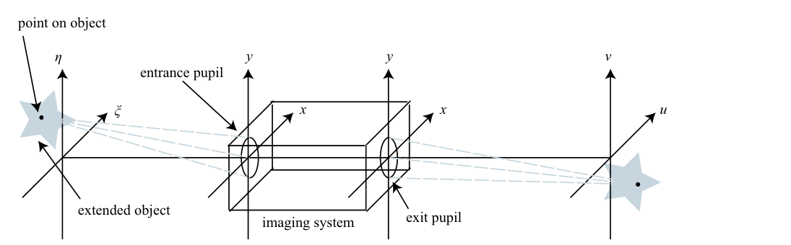
用射线追踪（CODE V、OSLO、ZEMAX 这类设计软件）可以算出给定物点的波前像差 \(W(x,y)\)。本书不追光线，直接假设 \(W\) 已经拿到，单位是波（波长数）；对应的相位是 \(\phi(x,y) = 2\pi W(x,y)\)（弧度）。把光瞳的振幅效应（渐晕、切趾）和像差并进一个复函数——广义光瞳函数（generalized pupil function）：
人话：原书把这行两边都写成 \(P\)（振幅光瞳和广义光瞳同名），笔记用花体 \(\mathcal{P}\) 区分。\(P(x,y)\) 是实值的振幅光瞳（圆孔就是 0/1，环形孔径中间挖洞），\(e^{i2\pi W}\) 是像差相位。记住这个组合——后面所有成像公式里出现的都将是它。
拓展：为什么 W 用"波"作单位
衍射光学的惯例：说"0.05 波的离焦"比"0.05λ 的光程差"顺口，而且 \(\mathcal{P}\) 里一乘 \(2\pi\) 就得到弧度相位。这个单位选择在 5.2.3 节还有个红利：Strehl 比的常用近似只含 \(\sigma^2_\phi = 4\pi^2\sigma^2\)，\(\sigma\) 以波计的 RMS 波前差——"RMS 半个波以内"立刻能心算 Strehl。
5.1.1 Seidel 像差#
最直白的表示：把 \(W\) 按归一化光瞳坐标（实际径向坐标除以光瞳半径，孔径边缘 \(r=1\)）展开成幂多项式：
各项按阶分类，就是表 5.1 的经典六种初级（Seidel）像差。
表 5.1 Seidel 像差项与名称
| 项 | 名称（英文） |
|---|---|
| \(A_0\) | piston（活塞/平移） |
| \(A_1 r\cos\theta + A_2 r\sin\theta\) | tilt（倾斜） |
| \(A_3 r^2\) | defocus（离焦） |
| \(A_4 r^2\cos(2\theta) + A_5 r^2\sin(2\theta)\) | astigmatism（像散） |
| \(A_6 r^3\cos\theta + A_7 r^3\sin\theta\) | coma（彗差） |
| \(A_8 r^4\) | spherical aberration（球差） |
系数 \(A_i\) 一般随视场角（物点离光轴的远近）变化；本章按原书的约定把它们当常量——即所有物点共享同一组像差。若每个物点像差不同，就得对每个物点分别仿真一次。
5.1.2 Zernike 圆多项式#
Seidel 多项式胜在直观（直接来自光线追迹），数学性质却差：在圆形孔径上既不正交也不完备。像差一复杂就需要更好的基底——**Zernike 圆多项式（Zernike circle polynomials）**在单位圆上完备且正交（圆环、高斯孔径也有对应的 Zernike 变体，本书只讲圆的）。本书采用 Noll 约定：双指标定义为
单指标 \(i\) 版本为
原书笔误：式 (5.4) 的 m=0 分支缺 \(\sqrt{n+1}\)
原书 (5.4) 的 m=0 分支印的是 \(Z_i = R_n^0(r)\)，丢了归一化因子 \(\sqrt{n+1}\)；(5.3) 直接代 \(m=0\) 也会多出 \(\sqrt{2}\)。判据有三：Listing 5.1 第 9 行写的是 Z = sqrt(n+1)*zrf(n,0,r)；表 5.2 的 \(Z_4=\sqrt{3}(2r^2-1)\)（\(n=2\)，\(\sqrt{n+1}=\sqrt{3}\)）也带因子；正交性 (5.9) 的 \(\int\!\int Z_i^2\,r\,dr\,d\theta=\pi\) 只有补上 \(\sqrt{n+1}\) 才成立（\(\int_0^1 (R_2^0)^2 r\,dr = 1/6\)，\(2\pi\times 3\times\frac16=\pi\)）。工程 1 已按修正实现并数值复核。
径向与角向因子：
(5.5a) 的阶乘在代码里用 Gamma 函数实现（\(s! = \Gamma(s+1)\)）——原书注释明说：gamma 比 factorial 执行快得多。(5.5b) 的 sin/cos 由单指标 \(i\) 的奇偶决定：\(i\) 奇取 sin、\(i\) 偶取 cos。\((n,m)\to i\) 的映射规则偏繁，直接查表——表 5.2 列出前 37 项（原书标题写"前 36 项"，实际列到 \(i=37\) 的三级球差，一并勘误）。
表 5.2 前 37 项 Zernike 多项式（Noll 约定，按原书重排）
| \(n\) | \(m\) | \(i\) | \(Z_i(r,\theta)\) | 名称 |
|---|---|---|---|---|
| 0 | 0 | 1 | \(1\) | piston 活塞 |
| 1 | 1 | 2 | \(2r\cos\theta\) | x tilt x 倾斜 |
| 1 | 1 | 3 | \(2r\sin\theta\) | y tilt y 倾斜 |
| 2 | 0 | 4 | \(\sqrt{3}\,(2r^2-1)\) | defocus 离焦 |
| 2 | 2 | 5 | \(\sqrt{6}\,r^2\sin(2\theta)\) | y primary astigmatism y 初级像散 |
| 2 | 2 | 6 | \(\sqrt{6}\,r^2\cos(2\theta)\) | x primary astigmatism x 初级像散 |
| 3 | 1 | 7 | \(\sqrt{8}\,(3r^3-2r)\sin\theta\) | y primary coma y 初级彗差 |
| 3 | 1 | 8 | \(\sqrt{8}\,(3r^3-2r)\cos\theta\) | x primary coma x 初级彗差 |
| 3 | 3 | 9 | \(\sqrt{8}\,r^3\sin(3\theta)\) | y trefoil y 三叶草 |
| 3 | 3 | 10 | \(\sqrt{8}\,r^3\cos(3\theta)\) | x trefoil x 三叶草 |
| 4 | 0 | 11 | \(\sqrt{5}\,(6r^4-6r^2+1)\) | primary spherical 初级球差 |
| 4 | 2 | 12 | \(\sqrt{10}\,(4r^4-3r^2)\cos(2\theta)\) | x secondary astigmatism x 次级像散 |
| 4 | 2 | 13 | \(\sqrt{10}\,(4r^4-3r^2)\sin(2\theta)\) | y secondary astigmatism y 次级像散 |
| 4 | 4 | 14 | \(\sqrt{10}\,r^4\cos(4\theta)\) | x tetrafoil x 四叶草 |
| 4 | 4 | 15 | \(\sqrt{10}\,r^4\sin(4\theta)\) | y tetrafoil y 四叶草 |
| 5 | 1 | 16 | \(\sqrt{12}\,(10r^5-12r^3+3r)\cos\theta\) | x secondary coma x 次级彗差 |
| 5 | 1 | 17 | \(\sqrt{12}\,(10r^5-12r^3+3r)\sin\theta\) | y secondary coma y 次级彗差 |
| 5 | 3 | 18 | \(\sqrt{12}\,(5r^5-4r^3)\cos(3\theta)\) | x secondary trefoil x 次级三叶草 |
| 5 | 3 | 19 | \(\sqrt{12}\,(5r^5-4r^3)\sin(3\theta)\) | y secondary trefoil y 次级三叶草 |
| 5 | 5 | 20 | \(\sqrt{12}\,r^5\cos(5\theta)\) | x pentafoil x 五叶草 |
| 5 | 5 | 21 | \(\sqrt{12}\,r^5\sin(5\theta)\) | y pentafoil y 五叶草 |
| 6 | 0 | 22 | \(\sqrt{7}\,(20r^6-30r^4+12r^2-1)\) | secondary spherical 次级球差 |
| 6 | 2 | 23 | \(\sqrt{14}\,(15r^6-20r^4+6r^2)\sin(2\theta)\) | y tertiary astigmatism y 三级像散 |
| 6 | 2 | 24 | \(\sqrt{14}\,(15r^6-20r^4+6r^2)\cos(2\theta)\) | x tertiary astigmatism x 三级像散 |
| 6 | 4 | 25 | \(\sqrt{14}\,(6r^6-5r^4)\sin(4\theta)\) | y secondary tetrafoil y 次级四叶草 |
| 6 | 4 | 26 | \(\sqrt{14}\,(6r^6-5r^4)\cos(4\theta)\) | x secondary tetrafoil x 次级四叶草 |
| 6 | 6 | 27 | \(\sqrt{14}\,r^6\sin(6\theta)\) | —（原书未命名） |
| 6 | 6 | 28 | \(\sqrt{14}\,r^6\cos(6\theta)\) | —（原书未命名） |
| 7 | 1 | 29 | \(4\,(35r^7-60r^5+30r^3-4r)\sin\theta\) | y tertiary coma y 三级彗差 |
| 7 | 1 | 30 | \(4\,(35r^7-60r^5+30r^3-4r)\cos\theta\) | x tertiary coma x 三级彗差 |
| 7 | 3 | 31 | \(4\,(21r^7-30r^5+10r^3)\sin(3\theta)\) | —（原书未命名） |
| 7 | 3 | 32 | \(4\,(21r^7-30r^5+10r^3)\cos(3\theta)\) | —（原书未命名） |
| 7 | 5 | 33 | \(4\,(7r^7-6r^5)\sin(5\theta)\) | —（原书未命名） |
| 7 | 5 | 34 | \(4\,(7r^7-6r^5)\cos(5\theta)\) | —（原书未命名） |
| 7 | 7 | 35 | \(4\,r^7\sin(7\theta)\) | —（原书未命名） |
| 7 | 7 | 36 | \(4\,r^7\cos(7\theta)\) | —（原书未命名） |
| 8 | 0 | 37 | \(3\,(70r^8-140r^6+90r^4-20r^2+1)\) | tertiary spherical 三级球差 |
图 5.2 给了同一族（x 像散）三个阶数的直观感受：\(i=6,12,24\) 的角向都是 \(\cos 2\theta\)，径向幂次分别是 2、4、6——阶数越高，从圆心到边缘的峰谷与零点越多。
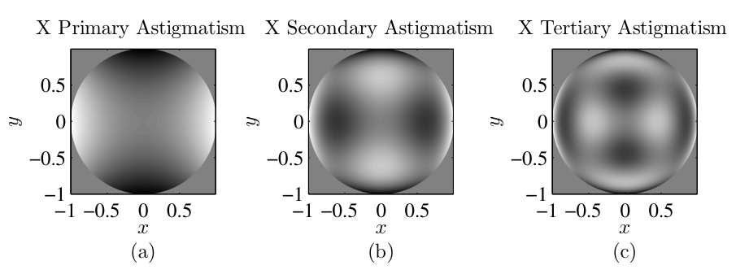
原书 Listing 5.1 的 zernike 函数（共 27 行）负责按 (5.4) 求值。它要 load('zernike_index') 读入 \((n,m)\mapsto i\) 的映射表；工程 1 的 Python 版把这个映射直接按表 5.2 的规则生成（按 \(n\) 升序、行内 \(|m|\) 升序、\(m=0\) 占一行、\(|m|>0\) 占两行，sin/cos 由 \(i\) 奇偶定）：
% Listing 5.1：zernike（原书 zernike.m，含子函数 zrf）
function Z = zernike(i, r, theta)
% function Z = zernike(i, r, theta)
% Creates the Zernike polynomial with mode index i,
% where i = 1 corresponds to piston
load('zernike_index'); % load the mapping of (n,m) to i
n = zernike_index(i,1);
m = zernike_index(i,2);
if m==0
Z = sqrt(n+1)*zrf(n,0,r); % 勘误对照：m=0 带 sqrt(n+1)
else
if mod(i,2) == 0 % i is even
Z = sqrt(2*(n+1))*zrf(n,m,r) .* cos(m*theta);
else % i is odd
Z = sqrt(2*(n+1))*zrf(n,m,r) .* sin(m*theta);
end
end
return
% Zernike radial function
function R = zrf(n, m, r)
R = 0;
for s = 0 : ((n-m)/2)
num = (-1)^s * gamma(n-s+1); % s! 用 gamma 实现，更快
denom = gamma(s+1) * gamma((n+m)/2-s+1) ...
* gamma((n-m)/2-s+1);
R = R + num / denom * r.^(n-2*s);
end
end
# 工程 1 的 zernike 实现（映射按表 5.2 规则生成，不依赖 .mat 文件）
def zrf(n, m, r):
"""Zernike 径向多项式 R_n^m(r)（式 5.5a）。阶乘用 Gamma 函数
实现（s! = Gamma(s+1)），与原书注释一致：gamma 比 factorial 快。"""
r = np.asarray(r, dtype=float)
R = np.zeros_like(r)
for s in range(0, (n - m) // 2 + 1):
num = (-1.0) ** s * gamma(n - s + 1.0)
den = (gamma(s + 1.0) * gamma((n + m) / 2.0 - s + 1.0)
* gamma((n - m) / 2.0 - s + 1.0))
R = R + num / den * r ** (n - 2 * s)
return R
def zernike(i, r, theta):
"""书式 (5.4)（m=0 分支已按勘误补 sqrt(n+1)）+ Listing 5.1。
i 从 1 开始（i=1 是 piston）；r 是归一化半径（孔径边缘 r=1）。"""
_, n, m = _ZIDX[i - 1] # _build_zernike_index 生成的映射
R = zrf(n, m, r)
if m == 0:
return np.sqrt(n + 1.0) * R # Listing 5.1 第 9 行
G = np.cos(m * theta) if i % 2 == 0 else np.sin(m * theta) # 式 (5.5b)
return np.sqrt(2.0 * (n + 1.0)) * R * G
模式定义齐了，任意波前就能展开成 Zernike 级数（Zernike series）：
这套基的核心卖点在正交性：
原书笔误：式 (5.7) 印成 \(1/(2n+1)\)
径向正交积分的正确值是 \(\delta_{nn'}/[2(n+1)]\)。两个反例：\(n=0\) 时 \(R_0^0=1\)，\(\int_0^1 r\,dr = \tfrac12\)，而书印公式给出 1；\(n=2\) 时 \(\int_0^1 (2r^2-1)^2 r\,dr = \tfrac16\)（数值积分复核 \(0.166667\)），书印公式给出 \(1/5=0.2\)。与 (5.9)、表 5.2、Listing 5.1 三方交叉可证。记住 (5.7)–(5.9) 合起来的效果：每个 \(Z_i\) 在单位圆上的模方积分恒等于 \(\pi\)——"单位 RMS"归一化。
由正交性立刻得到系数公式（正交投影）：
实际数据多半是笛卡尔网格上的二维采样（仿真输出或干涉仪测量），把 (5.10) 改写成网格求和：
求和跑遍孔径内的所有 \((p,q)\)。(5.11) 只依赖"孔径内有哪些样本"，不依赖样本坐标的具体数值——原书为此换记号：
再把二维下标压成一个线性下标 \(j\)（按列主序、行主序都行——C/C++ 天然行主序，MATLAB 天然列主序，Python 的布尔掩码是行主序；顺序无关紧要，只要 \(W\) 和 \(Z\) 用同一种顺序）：
反过来，用前 \(n_Z\) 个模式重构波前：
原书特别提醒：\(\cong\) 是近似号——离散网格上的正交性只是近似成立，格点越密越准（工程 1 实测：N=32 的 Gram 矩阵对角偏差 \(1.1\times10^{-1}\)，N=128 降到 \(1.4\times10^{-2}\)，加密 4 倍偏差降约 16 倍，正是二阶求和的 \(O(\delta^2)\) 收敛）。
线性下标带来一个漂亮的矩阵解释：把 \(W\) 排成列向量、把每个 Zernike 模式在孔径内的采样排成矩阵 \(Z\) 的一列：
\(Z\) 的行数 = 孔径内网格点数，列数 = 模式数。学过线性代数的你大概已经认出 (5.14) 是 (5.17) 的 Moore–Penrose 伪逆（最小二乘）解：
人话：求 Zernike 系数 = 解一个最小二乘问题。MATLAB 一行 A = Z \ W，Python 一行 np.linalg.lstsq(Z, W)——不必手写 (5.18)。原书 Listing 5.2 用 \(N=32\)、\(L=2\) 的网格试了一发：\(W = 0.5\,Z_2 + 0.25\,Z_4 - 0.6\,Z_{21}\)，投影回来的 \(A\) 正是 \([0.5,\ 0.25,\ -0.6]\)。工程 1 复现实测：系数精确恢复，拟合残差最大 \(8.9\times10^{-16}\)（浮点精度级别——因为 \(W\) 本身就住在 \(\{Z_2,Z_4,Z_{21}\}\) 张成的子空间里）。
% Listing 5.2：example_zernike_projection.m（原书 23 行）
N = 32; % number of grid points per side
L = 2; % total size of the grid [m]
delta = L / N; % grid spacing [m]
% cartesian & polar coordinates
[x y] = meshgrid((-N/2 : N/2-1) * delta);
[theta r] = cart2pol(x, y);
% unit circle aperture
ap = circ(x, y, 2);
% 3 Zernike modes
z2 = zernike(2, r, theta) .* ap;
z4 = zernike(4, r, theta) .* ap;
z21 = zernike(21, r, theta) .* ap;
% create the aberration
W = 0.5 * z2 + 0.25 * z4 - 0.6 * z21;
% find only grid points within the aperture
idx = logical(ap);
% perform linear indexing in column-major order
W = W(idx);
Z = [z2(idx) z4(idx) z21(idx)];
% solve the system of equations to compute coefficients
A = Z \ W
# 工程 1 验证 1 的对应片段（A = Z\W 的 numpy 版）
z2, z4, z21 = (zernike(i, r, theta) * ap for i in (2, 4, 21))
W = 0.5 * z2 + 0.25 * z4 - 0.6 * z21
Z = np.column_stack([z2[idxAp], z4[idxAp], z21[idxAp]]) # 式 (5.16)
A, *_ = np.linalg.lstsq(Z, W[idxAp], rcond=None) # 式 (5.18)
# 实测：A = [+0.500000 +0.250000 -0.600000]，拟合残差 max = 8.9e-16
5.1.2.1 分解与模式去除#
知道波前的 Zernike 成分有什么用？一个直接的应用是模式去除：真实像差可能包含极多模式，但你只关心（或只能矫正）其中一部分。定义模式受限版本（mode-limited version）：
它是 \(W\) 的近似，满足严格分解：
原书给了两个日常例子：
- 眼镜与隐形眼镜：模式 1–3（piston、tilt）不影响视觉质量，直接忽略；矫正镜片补偿 4（离焦）、⅚（像散），\(n_Z=6\)；眼睛看到的残差是 \(i\ge 7\) 的模式——幸运的是这些高阶系数通常小得多。
- 自适应光学（adaptive optics）：望远镜的"动态可重构隐形眼镜"。波前传感器以每秒上万帧的速率感知像差，驱动变形镜（deformable mirror）补偿——大气湍流造成的相位屏就是这样被压下去的（湍流屏的生成本身在 9.3 节）。变形镜只能复现有限个模式，所以总有残余像差没矫正掉；系统通常还配一块快速倾斜镜先把 tilt（模式 ⅔）摘掉，把模式 4 及以上留给变形镜。
原书 Listing 5.3 演示了完整流程：生成一帧湍流相位屏（\(N=40\)、\(L=2\)、\(r_0 = L/20\)，ft_phase_screen 来自第 9 章），投影到 100 个 Zernike 模式，再合成模式受限版本。图 5.3 与图 5.4 是结果的两半：图 5.3 是原始屏和限 3/16/36/100 阶的版本——模式越多越像原图；图 5.4 是对应的残余相位（(5.20) 的第二项）——模式越多残余结构越细。左上角（限 3 阶的残余）就是快速倾斜镜摘走 tilt 之后变形镜要面对的东西；右下角（限 100 阶的残余）是 100 阶变形镜之后仍然让像变糊的部分。
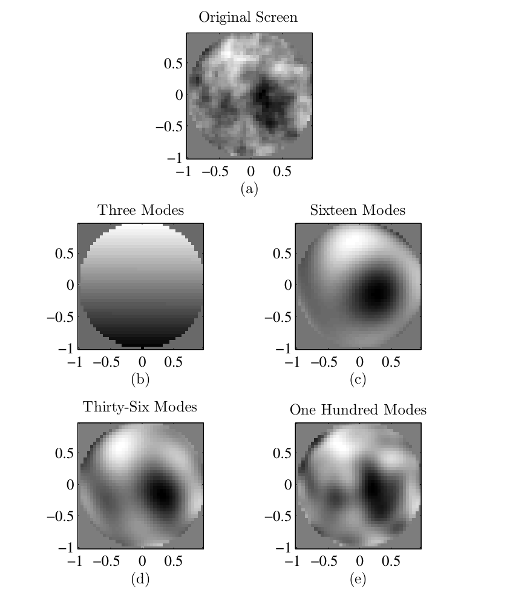
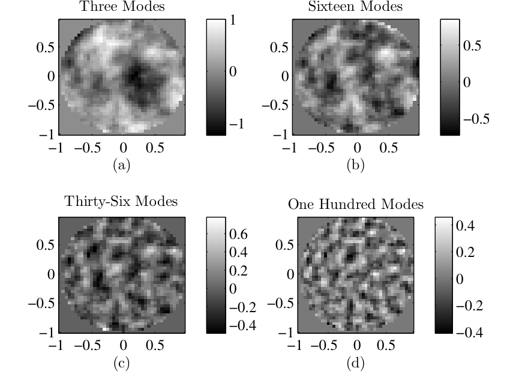
% Listing 5.3：example_zernike_synthesis.m（原书 33 行）
% The aberration in this example is a random draw of an
% atmospheric phase screen, discussed in Sec. 9.3.
N = 40; % number of grid points per side
L = 2; % total size of the grid [m]
delta = L / N; % grid spacing [m]
% cartesian & polar coordinates
[x y] = meshgrid((-N/2 : N/2-1) * delta);
[theta r] = cart2pol(x, y);
% unit circle aperture
ap = circ(x, y, 2);
% indices of grid points in aperture
idxAp = logical(ap);
% create atmospheric phase screen
r0 = L / 20;
screen = ft_phase_screen(r0, N, delta, inf, 0) ...
/ (2*pi) .* ap; % rad -> 波，再乘孔径
W = screen(idxAp); % perform linear indexing
%%% analyze screen
nModes = 100; % number of Zernike modes
% create matrix of Zernike polynomial values
Z = zeros(numel(W), nModes);
for idx = 1 : nModes
temp = zernike(idx, r, theta);
Z(:,idx) = temp(idxAp);
end
% compute mode coefficients
A = Z \ W;
% synthesize mode-limited screen
W_prime = Z*A;
% reshape mode-limited screen into 2-D for display
scr = zeros(N);
scr(idxAp) = W_prime;
# 工程 1 验证 3 的对应片段（相位屏用内置最小谱法替代第 9 章的
# ft_phase_screen；N 加密到 128 以压低离散正交误差）
phi = phase_screen_min(r0, N3, delta3, L0=np.inf, seed=7,
target_rms_waves=0.6) # rad
W3 = phi / (2 * np.pi) * ap3 # rad -> 波（Listing 5.3 第 16 行）
Wvec = W3[ap3] # 线性索引
Zmat = np.zeros((Wvec.size, nModes))
for idx in range(nModes):
temp = zernike(idx + 1, r3, t3)
Zmat[:, idx] = temp[ap3]
Amode, *_ = np.linalg.lstsq(Zmat, Wvec, rcond=None) # A = Z \ W
工程 1 在此之上多走了两步（图 5-8）：一是画出相位屏的 Zernike 系数谱（\(|a_i|\) 随 \(i\) 大致按幂律下滑，湍流的统计性质写在 9.3 节）；二是把"残差方差的两种算法"摆在一起互证——直接算 \(\mathrm{mean}[(W-W')^2]\)，与用 (5.26) 从系数尾部算 \(\sum_{i>n_Z}a_i^2\)，两条曲线在光滑波前上重合，在湍流屏上差出一个恒定的 \(0.0057\)——那是 200 阶也装不下的网格尺度内容，恰好演示了原书 (5.15) "只是近似"的告诫。
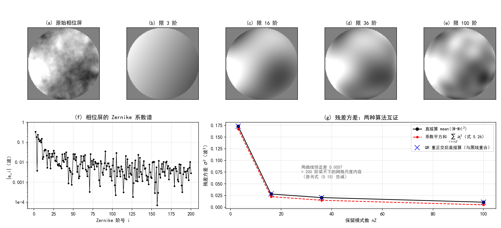
5.1.2.2 RMS 波前像差#
评价像差大小时常用孔径上的 RMS 值 \(\sigma\)。均方偏差直接按定义算：
\(\bar{W}\) 是 \(W\) 在孔径上的均值（单位圆面积是 \(\pi\)，所以归一化因子是 \(1/\pi\)）。把 (5.6) 代进去——注意均值正好被 \(i=1\) 的 piston 项吸收，所以级数从 \(i=2\) 起：
把平方拆成两个级数的乘积，正交性 (5.9) 会让所有 \(i\neq i'\) 的交叉项消失：
人话：波前方差 = 从 \(i=2\) 起的系数平方和。不用再算任何积分——正交基把这步变成加法。这就是 5.1.2 开头"单位 RMS 归一化"（每个 \(\int\!\int Z_i^2 = \pi\)）兑现红利的地方：\(a_i\) 本身就是第 \(i\) 个模式对 RMS 的贡献（单位：波）。
工程 1 数值核对：光滑波前 \(W = 0.5 Z_2 + 0.25 Z_4 - 0.6 Z_{21}\) 的三个模式全在 \(i\ge2\)，(5.26) 给 \(\sigma^2 = 0.5^2+0.25^2+0.6^2 = 0.6725\)；直接按 (5.21) 离散求均方，N=32 得 \(0.6422\)（差 \(4.5\times10^{-2}\)）、N=128 得 \(0.6693\)（差 \(4.7\times10^{-3}\)）——随网格加密收敛到系数平方和。图 5-8(g) 的湍流屏曲线则是"恒差 = 高阶内容"的活例子。
工程 1：Zernike 与波前模式分解（Listings 5.1–5.3 复现）#
对应文件 matlab/waveprop/ch5/ch5_zernike.m（Python 版在本 notebook 工程 1 cell，python/waveprop/第5章_代码实战.ipynb）：
```matlab
%% ===== 书 Schmidt PM199 第 5 章 =====
% 成像系统与像差：Zernike 圆多项式与波前模式分解
% （原书 5.1 节，Listings 5.1-5.3；与 python/waveprop/第5章_代码实战.ipynb
% 工程 1 数值行为一致，本机无 MATLAB 时以 Python 实跑结果为准）
%
% 原书要点：
% 广义光瞳函数 P = P_ap .* exp(i*2*pi*W)（式 5.1），波前差 W 以"波"为单位；
% Noll 单指标 Zernike：Z_i = sqrt(2(n+1)) R_n^m(r) G_m(theta)（式 5.3/5.4），
% 径向 R_n^m 按 gamma 函数实现（式 5.5a，原书注释：gamma 比 factorial 快）；
% 单位圆上正交（式 5.7-5.9）-> 系数 = 正交投影/最小二乘（式 5.10-5.18），
% W = Z*A（式 5.17），A = (Z'*Z)^{-1} Z'*W（式 5.18，MATLAB 里就是 Z\W）；
% 模式受限版 W' = sum_{i<=nZ} a_i Z_i（式 5.19-5.20）；
% 波前方差 sigma^2 = sum_{i>=2} a_i^2（式 5.21-5.26）。
%
% 原书勘误（本脚本按修正实现）：
% (a) 式 (5.4)/(5.3) 的 m=0 情形印成 Z_i = R_n^0(r)——缺 sqrt(n+1)
% 归一化因子；Listing 5.1 第 9 行 sqrt(n+1)*zrf(n,0,r) 才是对的
% （对照表 5.2 的 Z4 = sqrt(3)(2r^2-1) 可证）。
% (b) 式 (5.7) 印成 1/(2n+1)——应为 1/(2(n+1))。n=0 即反例：
% int_0^1 1*1*r dr = 1/2 而非 1；n=2 时数值积分 = 1/6 而非 1/5。
% (c) 表 5.2 标题写"前 36 项"，实际列出 i = 1..37（含三级球差）。
%
% 验证（编号与 notebook 工程 1 一致）：
% (0) 表 5.2 抽查：生成的 (i,n,m) 映射与书中多项式逐一对照；
% (1) Listing 5.2 复现：W = 0.5*Z2 + 0.25*Z4 - 0.6*Z21，Z\W 精确恢复权重；
% (2) Gram 矩阵正交性（孔径内求和）+ 式 (5.7) 勘误的数值积分复核 +
% sigma^2 两种算法互证（式 5.21 离散 vs 式 5.26）；
% (3) Listing 5.3 复现：随机相位屏 -> 200 阶投影 -> 模式受限 3/16/36/100 阶，
% 残差方差两种算法互证（差值 = 200 阶装不下的网格尺度内容）。
%
% MATLAB/Python 差异（对应 notebook 内注释）：
% - 线性索引：MATLAB 按列主序（原书 5.1.2 节点名 MATLAB 用 column-major），
% logical 掩码索引天然给出列主序向量，与式 (5.14) 约定一致；numpy 布尔
% 掩码是行主序——顺序不同不影响最小二乘的解。
% - Z\W 即式 (5.18) 的最小二乘解，等价 np.linalg.lstsq。
% - 相位屏随机数：rng 与 numpy default_rng 实现不同，屏不逐点一致，
% 统计结论一致。
% - 本地函数需 R2016b+；sum(...,'all') / max(...,[],'all') 需 R2018b+。
clear; clc; close all;
%% 验证 0：表 5.2 抽查
rr = linspace(0, 1, 41);
tt = linspace(0, 2*pi, 73);
[RR, TT] = meshgrid(rr, tt);
checks = {
1, @(r,t) ones(size(r)), 'Z1 = 1 (piston)';
2, @(r,t) 2*r.*cos(t), 'Z2 = 2r cos(theta)';
4, @(r,t) sqrt(3)*(2*r.^2-1), 'Z4 = sqrt3(2r^2-1)';
11, @(r,t) sqrt(5)*(6*r.^4-6*r.^2+1), 'Z11 = sqrt5(6r^4-6r^2+1)';
22, @(r,t) sqrt(7)*(20*r.^6-30*r.^4+12*r.^2-1), 'Z22 = sqrt7(20r^6-...-1)';
37, @(r,t) 3*(70*r.^8-140*r.^6+90*r.^4-20*r.^2+1), 'Z37 = 3(70r^8-...+1)'};
fprintf('===== 验证 0：表 5.2 抽查 =====\n');
for k = 1:size(checks, 1)
err = max(abs(zernike(checks{k,1}, RR, TT) - checks{k,2}(RR, TT)), [], 'all');
fprintf(' %-24s max|diff| = %.2e\n', checks{k,3}, err);
end
%% 验证 1：Listing 5.2 投影复现（模式 2/4/21）
N = 32; L = 2; delta = L / N;
[x, y] = meshgrid((-N/2 : N/2-1) * delta);
r = hypot(x, y); theta = atan2(y, x);
ap = double(hypot(x, y) <= 1); % circ(x,y,2)：直径 2 -> 单位圆孔径
idxAp = logical(ap);
z2 = zernike(2, r, theta) .* ap;
z4 = zernike(4, r, theta) .* ap;
z21 = zernike(21, r, theta) .* ap;
W = 0.5*z2 + 0.25*z4 - 0.6*z21; % 原书 Listing 5.2 第 16 行
Z = [z2(idxAp) z4(idxAp) z21(idxAp)]; % 式 (5.16)：列主序线性索引
A = Z \ W(idxAp); % 式 (5.18) 的 MATLAB 一行版
fprintf('===== 验证 1：Listing 5.2 投影复现 =====\n');
fprintf(' 恢复系数 A = [%+.6f %+.6f %+.6f]（真值 [0.5 0.25 -0.6]）\n', A);
fprintf(' 拟合残差 max = %.2e\n', max(abs(Z*A - W(idxAp)), [], 'all'));
%% 验证 2：正交性 + 式 (5.7) 勘误复核 + sigma^2 互证
nG = 12;
G = zeros(nG);
for ii = 1:nG
Zi = zernike(ii, r, theta);
for jj = ii:nG
Zj = zernike(jj, r, theta);
G(ii, jj) = sum(Zi(idxAp) .* Zj(idxAp)) * delta^2;
end
end
G = G + G.' - diag(diag(G));
off = max(abs(G - diag(diag(G))), [], 'all') / pi;
diagErr = max(abs(diag(G)/pi - 1), [], 'all');
fprintf('===== 验证 2：正交性 + 式 (5.7) 勘误 =====\n');
fprintf(' N=32：Gram 对角/pi 最大偏差 %.2e，非对角最大 |G_ij|/pi %.2e\n', ...
diagErr, off);
% 式 (5.7) 书印 1/(2n+1)：对 n=2 即 1/5；真实值 = 1/[2(n+1)] = 1/6
val = integral(@(q) (2*q.^2 - 1).^2 .* q, 0, 1);
fprintf(' int_0^1 (R_2^0)^2 r dr = %.6f = 1/6 = 1/[2(n+1)]\n', val);
fprintf(' 书式 (5.7) 印的是 1/(2n+1) = %.6f —— 与表 5.2/Listing 5.1 矛盾，系印刷错误\n', 1/5);
% RMS 方差恒等式（式 5.21 vs 5.26）：W = 0.5 Z2 + 0.25 Z4 - 0.6 Z21
% 全部 i>=2，sigma^2 应 = 0.5^2 + 0.25^2 + 0.6^2 = 0.6725
Wsm = 0.5*z2 + 0.25*z4 - 0.6*z21;
sig2_direct = mean((Wsm(idxAp) - mean(Wsm(idxAp))).^2); % 式 (5.21) 离散版
fprintf(' 光滑波前 sigma^2：N=32 直接 = %.4f vs 系数平方和 = %.4f（相对差 %.1e）\n', ...
sig2_direct, 0.6725, abs(sig2_direct - 0.6725)/0.6725);
%% 验证 3：Listing 5.3 模式分解/合成 + 残差方差恒等式
N3 = 128; L3 = 2.0; delta3 = L3/N3; r0 = L3/20;
[x3, y3] = meshgrid((-N3/2 : N3/2-1) * delta3);
ap3 = hypot(x3, y3) <= 1;
idxA = logical(ap3);
phi = phase_screen_min(r0, N3, delta3, 0.6, 7); % rad
W3 = phi / (2*pi) .* ap3; % rad -> 波（Listing 5.3 第 16 行）
r3 = hypot(x3, y3); t3 = atan2(y3, x3);
Wvec = W3(idxA);
fprintf('===== 验证 3：Listing 5.3 模式分解/合成 =====\n');
fprintf(' 相位屏：sigma_W = %.4f 波（孔径内 RMS；重定标目标 0.6 为全帧）\n', std(Wvec));
nModes = 200;
Zmat = zeros(numel(Wvec), nModes);
for q = 1:nModes
tmp = zernike(q, r3, t3);
Zmat(:, q) = tmp(idxA);
end
Amode = Zmat \ Wvec; % 式 (5.18)
fprintf(' 200 阶投影：a1..a5 = [%+.4f, %+.4f, %+.4f, %+.4f, %+.4f]\n', Amode(1:5));
% QR 重正交版：Q 列正交，sum(Bq(nZ+1:end)^2) 精确等于残差均方
[Q, ~] = qr(Zmat, 0);
Bq = Q \ Wvec;
Nap3 = numel(Wvec);
nZ_list = [3 16 36 100];
resD = zeros(size(nZ_list)); resC = zeros(size(nZ_list)); resQ = zeros(size(nZ_list));
for q = 1:numel(nZ_list)
nZ = nZ_list(q);
resD(q) = mean((Wvec - Zmat(:,1:nZ)*Amode(1:nZ)).^2);
resC(q) = sum(Amode(nZ+1:end).^2) / Nap3;
resQ(q) = mean((Wvec - Q(:,1:nZ)*Bq(1:nZ)).^2);
fprintf(' nZ=%3d：残差直接=%.6f vs 系数平方和=%.6f（相对差 %.1e）；QR 直接=%.6f\n', ...
nZ, resD(q), resC(q), abs(resD(q)-resC(q))/resD(q), resQ(q));
end
fprintf(' （结论：sigma^2 = sum_{i>=2} a_i^2 在光滑波前上到离散正交精度；'...
'相位屏上两曲线差恒定 = 200 阶装不下的网格尺度内容，对应式 (5.15) 的告诫）\n');
%% 绘图：模式受限屏（仿原书图 5.3/5.4）+ 系数谱 + 残差方差
scrData = {W3, '(a) 原始相位屏'};
lab = {'3', '16', '36', '100'};
tags = {'b', 'c', 'd', 'e'};
for q = 1:4
scr = zeros(N3);
scr(idxA) = Zmat(:, 1:nZ_list(q)) * Amode(1:nZ_list(q));
scrData{end+1} = scr; %#ok<SAGROW>
scrData{end+1} = sprintf('(%s) 限 %s 阶', tags{q}, lab{q}); %#ok<SAGROW>
end
figure('Position', [40 40 1400 640]);
for q = 1:5
subplot(2, 5, q);
imagesc(scrData{2*q-1} .* ap3); colormap gray; caxis([-1.2 1.2]);
axis image off; title(scrData{2*q});
end
subplot(2, 5, [6 7]);
semilogy(2:nModes, abs(Amode(2:end)), 'k.-', 'MarkerSize', 4);
set(gca, 'YTick', [1e0 1e-1 1e-2 1e-3 1e-4], 'YTickLabel', {'1','0.1','0.01','0.001','1e-4'});
xlabel('Zernike 阶号 i'); ylabel('|a_i|（波）');
title('(f) 相位屏的 Zernike 系数谱'); grid on; ylim([1e-4 1]);
subplot(2, 5, [8 10]);
plot(nZ_list, resD, 'ko-', 'LineWidth', 1.2); hold on;
plot(nZ_list, resC, 'r.--', 'LineWidth', 1.2, 'MarkerSize', 8);
plot(nZ_list, resQ, 'bx', 'MarkerSize', 11, 'LineStyle', 'none');
xlabel('保留模式数 nZ'); ylabel('残差方差 sigma^2（波^2）');
title('(g) 残差方差：两种算法互证'); grid on;
legend({'直接算 mean((W-W'')^2)', '系数平方和（式 5.26）', 'QR 重正交后直接算'}, ...
'FontSize', 8, 'Location', 'northeast');
%% ===== 本地函数 =====
function [n, m] = zidx(i)
% 表 5.2 的 (i,n,m) 映射（Noll 单指标，i 从 1 开始；规则按表归纳）：
% 按 n 升序，第 n 行占 n+1 个模式；行内 |m| 与 n 同奇偶、升序；
% m=0 占 1 行，|m|>0 占 2 行（sin/cos 由 i 奇偶定：i 奇 sin，i 偶 cos，
% 即式 (5.5b)）。列主序/行主序无关紧要，映射本身逐项对上表 5.2。
persistent rows
if isempty(rows)
rows = zeros(0, 2);
for n0 = 0:40
for m0 = mod(n0, 2):2:n0
rows(end+1, :) = [n0, m0]; %#ok<AGROW>
if m0 > 0
rows(end+1, :) = [n0, m0]; %#ok<AGROW>
end
end
end
end
n = rows(i, 1);
m = rows(i, 2);
end
function R = zrf(n, m, r)
% Zernike 径向多项式 R_n^m(r)（式 5.5a）。阶乘按原书注释用 gamma 实现
% （s! = Gamma(s+1)），比 factorial 快。
R = zeros(size(r));
for s = 0:(n-m)/2
num = (-1)^s * gamma(n - s + 1);
den = gamma(s+1) * gamma((n+m)/2 - s + 1) * gamma((n-m)/2 - s + 1);
R = R + num / den * r.^(n - 2*s);
end
end
function Z = zernike(i, r, theta)
% 书式 (5.4)（m=0 分支已按勘误补 sqrt(n+1)）+ Listing 5.1。
% i 从 1 开始（i=1 是 piston）；r 是归一化半径（孔径边缘 r=1）。
[n, m] = zidx(i);
R = zrf(n, m, r);
if m == 0
Z = sqrt(n+1) * R; % Listing 5.1 第 9 行
else
if mod(i, 2) == 0 % i 偶 -> cos（式 5.5b）
Z = sqrt(2*(n+1)) * R .* cos(m*theta);
else % i 奇 -> sin
Z = sqrt(2*(n+1)) * R .* sin(m*theta);
end
end
end
function W = phase_screen_min(r0, N, delta, target_rms_waves, seed)
% 最小 Kolmogorov 谱法相位屏（单位 rad）。谱 Phi = 0.023 r0^{-5/3} f^{-11/3}
% （von Karman 去掉外尺度项），粗网格垫零 4 倍把最低频率降到 1/(4L) 弥补
% 无次谐波时的低频功率缺失，最后按孔径内 RMS 重定标到目标值（单位：波）。
% 正式的 ft_phase_screen（Kolmogorov + 次谐波）在第 9 章给出。
rng(seed, 'twister');
Npad = 4 * N;
fx = (0:Npad-1) / (Npad*delta); % 与 ifft2 频率排列一致（= numpy fftfreq）
fx(fx >= 1/(2*delta)) = fx(fx >= 1/(2*delta)) - 1/delta;
[FX, FY] = meshgrid(fx, fx);
F2 = FX.^2 + FY.^2;
Phi = 0.023 * r0^(-5/3) .* F2.^(-11/6);
Phi(1, 1) = 0; % 活塞项（DC 处 0^{-11/6} 无定义）
W = real(ifft2(sqrt(Phi) .* fft2(randn(Npad))));
i0 = (Npad - N)/2 + 1; % 居中裁切（1-based）
W = W(i0:i0+N-1, i0:i0+N-1);
W = W / (std(W(:)) / (2*pi) / target_rms_waves); % 重定标（单位：波）
end
```python
# -*- coding: utf-8 -*-
"""
===== 书 Schmidt PM199 第 5 章（工程 1）=====
成像系统与像差：Zernike 圆多项式与波前模式分解（原书 5.1 节，Listings 5.1-5.3）
原书要点：
广义光瞳函数 P(x,y) = P_ap(x,y) exp(i 2 pi W(x,y))（式 5.1），其中波前差
W 以"波"为单位。任意波前可按 Noll 单指标约定展开为 Zernike 级数
W = sum_i a_i Z_i（式 5.6）；Zernike 圆多项式在单位圆上正交
（式 5.7-5.9，int int Z_i Z_j r dr dtheta = pi delta_ij），
系数用最小二乘/正交投影得到（式 5.10-5.18）；
模式受限版本 W' = sum_{i<=nZ} a_i Z_i（式 5.19-5.20），
波前方差 sigma^2 = sum_{i>=2} a_i^2（式 5.21-5.26）。
数值验证（运行本脚本全部自动打印）：
(0) 表 5.2 抽查：生成的 (i,n,m) 映射与书中多项式逐一对上
（Z1=1, Z2=2r cos, Z4=sqrt3(2r^2-1), Z11, Z22, Z37）；
(1) 书例复现（Listing 5.2）：N=32, L=2, 模式 2/4/21 权重 0.5/0.25/-0.6，
最小二乘恢复系数 A；
(2) 正交性数值检查：Gram 矩阵 int int Z_i Z_j r dr dtheta ≈ pi delta_ij；
并复核式 (5.7) 的印刷错误：int_0^1 (R_2^0)^2 r dr = 1/6 = 1/[2(n+1)]，
不是书中印的 1/(2n+1) = 1/5（对照表 5.2 与 Listing 5.1 可证）；
(3) 书例复现（Listing 5.3）：随机湍流相位屏 -> 100 阶 Zernike 投影 ->
模式受限版 nZ = 3/16/36/100（对应原书图 5.3/5.4）；
残差方差的两种算法互证：直接算 mean((W-W')^2) vs sum_{i>nZ} a_i^2。
相位屏说明：原书 Listing 5.3 调用第 9 章的 ft_phase_screen(r0, N, delta, inf, 0)
（Kolmogorov 谱 + 次谐波低频补偿）。本工程内置一个最小谱法相位屏
（von Karman 谱，粗网格垫零到 4 倍捕捉低频，幅度重定标到指定 RMS），
谱形状与第 9 章一致，足够演示模式分解；正式的 ft_phase_screen 在 ch9 笔记给出。
MATLAB/Python 差异（对应 .m 文件内注释）：
- MATLAB 1-based / numpy 0-based：居中排列的零坐标样本位置不同。
- np.meshgrid 默认 'xy' 与 MATLAB meshgrid 一致。
- MATLAB 的 Z\\W 与 np.linalg.lstsq 都是最小二乘解（式 5.18）。
- scipy.special.gamma 与 MATLAB gamma 均为 Gamma 函数（原书注释：
gamma 比 factorial 快，式 5.5 的阶乘用它实现）。
用法：python ch5_zernike.py <输出目录> 保存 PNG；否则弹窗显示。
依赖：numpy + matplotlib + scipy；base.py（同仓库 python/fourier/common，circle）。
"""
import os
import sys
import numpy as np
import matplotlib.pyplot as plt
from scipy.special import gamma
plt.rcParams['font.sans-serif'] = ['SimHei', 'Microsoft YaHei', 'Arial Unicode MS']
plt.rcParams['axes.unicode_minus'] = False
# ---- 复用《计算傅里叶光学》笔记的公共基础模块（同仓库） ----
sys.path.insert(0, os.path.join(os.path.dirname(os.path.abspath(__file__)),
"..", "..", "fourier", "common"))
from base import circle # noqa: E402 circle(X, Y, R) 半径参数；原书 circ(x,y,D) 直径参数
# ===== 书 Listing 5.1：zernike =====
def _build_zernike_index(n_max):
"""生成书表 5.2 的 (i, n, m) 映射（Noll 单指标，i 从 1 开始）。
规则（由表 5.2 归纳）：按 n 升序分行，第 n 行占 n+1 个模式；
行内 |m| 升序（与 n 同奇偶：m = n%2, n%2+2, ..., n）；
m=0 占 1 行；每个 |m|>0 占 2 行，先 sin 还是 cos 由行号 i 的奇偶决定
——即式 (5.5b)：i 奇 -> sin(m theta)，i 偶 -> cos(m theta)。
"""
rows = []
i = 0
for n in range(n_max + 1):
for m in range(n % 2, n + 1, 2): # 与 n 同奇偶的 |m|，升序
if m == 0:
i += 1
rows.append((i, n, 0))
else:
i += 1
rows.append((i, n, m)) # 先到的一行（sin 或 cos 由 i 奇偶定）
i += 1
rows.append((i, n, m))
return rows
_ZIDX = _build_zernike_index(30) # (i,n,m) 表：i 最大 496 阶，覆盖本章 100 阶
def zrf(n, m, r):
"""Zernike 径向多项式 R_n^m(r)（式 5.5a）。
式中的阶乘按原书注释用 Gamma 函数实现（s! = Gamma(s+1)），比 factorial 快。
"""
r = np.asarray(r, dtype=float)
R = np.zeros_like(r)
for s in range(0, (n - m) // 2 + 1):
num = (-1.0) ** s * gamma(n - s + 1.0)
den = (gamma(s + 1.0) * gamma((n + m) / 2.0 - s + 1.0)
* gamma((n - m) / 2.0 - s + 1.0))
R = R + num / den * r ** (n - 2 * s)
return R
def zernike(i, r, theta):
"""书式 (5.4)（已修正 m=0 分支缺 sqrt(n+1) 的印刷错误）+ Listing 5.1。
i 从 1 开始（i=1 是 piston）；r 是归一化半径（孔径边缘 r=1）。
m != 0：Z_i = sqrt(2(n+1)) R_n^m(r) G_m(theta)；
m == 0：Z_i = sqrt(n+1) R_n^0(r)（Listing 5.1 第 9 行同此）。
"""
_, n, m = _ZIDX[i - 1]
R = zrf(n, m, r)
if m == 0:
return np.sqrt(n + 1.0) * R
G = np.cos(m * theta) if i % 2 == 0 else np.sin(m * theta) # 式 (5.5b)
return np.sqrt(2.0 * (n + 1.0)) * R * G
# ===== 书 5.1 节：最小谱法相位屏（替代第 9 章 ft_phase_screen） =====
def phase_screen_min(r0, N, delta, L0=np.inf, seed=0, target_rms_waves=None):
"""最小 von Karman 相位屏（单位：rad）。
谱 Phi(f) = 0.023 r0^{-5/3} (f^2 + L0^{-2})^{-11/6}
（L0=inf 时退化为 Kolmogorov f^{-11/3}）。
粗网格垫零到 4 倍（等效更大采样区域），把最低频率降到 1/(4L)，
部分弥补无次谐波时的低频功率缺失；target_rms_waves 给定时按孔径内
RMS 重定标到该值（单位：波）。第 9 章将给出正式的 ft_phase_screen。
"""
rng = np.random.default_rng(seed)
Npad = 4 * N
fx = np.fft.fftfreq(Npad, d=delta) # 移位排列的频率轴
FX, FY = np.meshgrid(fx, fx)
F2 = FX ** 2 + FY ** 2
L02 = np.inf if np.isinf(L0) else L0 ** 2
with np.errstate(divide='ignore'):
Phi = 0.023 * r0 ** (-5.0 / 3.0) * (F2 + 1.0 / L02) ** (-11.0 / 6.0)
Phi[0, 0] = 0.0 # 活塞项置零（DC 处 0^{-11/6} 无定义）
noise = rng.standard_normal((Npad, Npad))
W = np.fft.ifft2(np.sqrt(Phi) * np.fft.fft2(noise)).real # 实相位屏（rad）
W = W[(Npad - N) // 2:(Npad + N) // 2, (Npad - N) // 2:(Npad + N) // 2]
if target_rms_waves is not None:
W = W / (np.std(W) / (2 * np.pi) / target_rms_waves) # 定标到目标 RMS（波）
return W
def main(outdir=None):
# ---- 原书 Listing 5.2 的参数 ----
N = 32 # number of grid points per side
L = 2.0 # total size of the grid [m]
delta = L / N # grid spacing [m]
x, y = np.meshgrid((np.arange(N) - N // 2) * delta,
(np.arange(N) - N // 2) * delta)
r = np.hypot(x, y) # MATLAB cart2pol 的 r
theta = np.arctan2(y, x) # MATLAB cart2pol 的 theta
ap = circle(x, y, 1.0) # circ(x, y, 2)：直径 2 -> 单位圆孔径
idxAp = ap.astype(bool)
print('===== 验证 0：表 5.2 抽查（生成映射 vs 书中多项式） =====')
checks = [
(1, lambda r, t: np.ones_like(r), 'Z1 = 1 (piston)'),
(2, lambda r, t: 2 * r * np.cos(t), 'Z2 = 2r cos(theta) (x tilt)'),
(4, lambda r, t: np.sqrt(3) * (2 * r ** 2 - 1), 'Z4 = sqrt3 (2r^2-1) (defocus)'),
(11, lambda r, t: np.sqrt(5) * (6 * r ** 4 - 6 * r ** 2 + 1),
'Z11 = sqrt5 (6r^4-6r^2+1) (primary spherical)'),
(22, lambda r, t: np.sqrt(7) * (20 * r ** 6 - 30 * r ** 4 + 12 * r ** 2 - 1),
'Z22 = sqrt7 (20r^6-30r^4+12r^2-1) (secondary spherical)'),
(37, lambda r, t: 3 * (70 * r ** 8 - 140 * r ** 6 + 90 * r ** 4
- 20 * r ** 2 + 1), 'Z37 = 3(70r^8-...+1) (tertiary spherical)'),
]
rr = np.linspace(0, 1, 41)
tt = np.linspace(0, 2 * np.pi, 73)
RR, TT = np.meshgrid(rr, tt)
for i, fun, name in checks:
err = np.max(np.abs(zernike(i, RR, TT) - fun(RR, TT)))
print(' %-58s max|diff| = %.2e' % (name, err))
print('===== 验证 1：Listing 5.2 投影复现（模式 2/4/21） =====')
# 原书：W = 0.5*z2 + 0.25*z4 - 0.6*z21，A = Z\W 应精确恢复权重
z2, z4, z21 = (zernike(i, r, theta) * ap for i in (2, 4, 21))
W = 0.5 * z2 + 0.25 * z4 - 0.6 * z21
Z = np.column_stack([z2[idxAp], z4[idxAp], z21[idxAp]]) # 式 (5.16)
A, *_ = np.linalg.lstsq(Z, W[idxAp], rcond=None) # 式 (5.18)
print(' 恢复系数 A = [%+.6f %+.6f %+.6f]（真值 [0.5 0.25 -0.6]）' % tuple(A))
resid = Z @ A - W[idxAp]
print(' 拟合残差 max = %.2e（离散网格上的式 (5.15) 近似误差）'
% np.max(np.abs(resid)))
print('===== 验证 2：正交性 + 式 (5.7) 印刷错误复核 =====')
# Gram 矩阵：int int Z_i Z_j r dr dtheta ≈ sum_ap Z_i Z_j delta^2 ≈ pi delta_ij
# 注意：只在孔径内求和（正交性只在单位圆上成立），孔径外样本必须剔除
nG = 12
G = np.zeros((nG, nG))
for ii in range(nG):
Zi = zernike(ii + 1, r, theta)[idxAp]
for jj in range(ii, nG):
G[ii, jj] = G[jj, ii] = np.sum(Zi * zernike(jj + 1, r, theta)[idxAp]) \
* delta ** 2
off = np.max(np.abs(G - np.diag(np.diag(G)))) / np.pi
diag_err = np.max(np.abs(np.diag(G) / np.pi - 1.0))
print(' N=32：Gram 对角/π 最大偏差 %.2e，非对角最大 |G_ij|/π %.2e'
% (diag_err, off))
# N=128 加密网格：离散正交性收敛，验证"偏差来自离散化而非公式"
Nf = 128
xf, yf = np.meshgrid((np.arange(Nf) - Nf // 2) * (L / Nf),
(np.arange(Nf) - Nf // 2) * (L / Nf))
apf = circle(xf, yf, 1.0).astype(bool)
rf = np.hypot(xf, yf)
tf = np.arctan2(yf, xf)
df = (L / Nf) ** 2
Gf = np.zeros((nG, nG))
for ii in range(nG):
Zi = zernike(ii + 1, rf, tf)[apf]
for jj in range(ii, nG):
Gf[ii, jj] = Gf[jj, ii] = np.sum(Zi * zernike(jj + 1, rf, tf)[apf]) * df
print(' N=128：Gram 对角/π 最大偏差 %.2e，非对角最大 |G_ij|/π %.2e（网格加密 4 倍偏差降 ~16 倍）'
% (np.max(np.abs(np.diag(Gf) / np.pi - 1.0)),
np.max(np.abs(Gf - np.diag(np.diag(Gf)))) / np.pi))
# 式 (5.7) 书印 1/(2n+1)：对 n=2 即 1/5；真实值 = 1/[2(n+1)] = 1/6
from scipy.integrate import quad
val = quad(lambda q: (2 * q ** 2 - 1) ** 2 * q, 0, 1)[0]
print(' int_0^1 (R_2^0)^2 r dr = %.6f = 1/6 = 1/[2(n+1)]' % val)
print(' 书式 (5.7) 印的是 1/(2n+1) = %.6f —— 与表 5.2/Listing 5.1 矛盾，系印刷错误'
% (1 / 5))
# RMS 方差恒等式（式 5.21 vs 5.26）在书例光滑波前上核对：
# W = 0.5 Z2 + 0.25 Z4 - 0.6 Z21，全部 i>=2，sigma^2 应 = 0.5^2+0.25^2+0.6^2 = 0.6725
Wsm = 0.5 * z2 + 0.25 * z4 - 0.6 * z21
sig2_direct = np.mean((Wsm[idxAp] - np.mean(Wsm[idxAp])) ** 2) # 式 (5.21) 离散版
print(' 光滑波前 sigma^2：N=32 直接 = %.4f vs 系数平方和 = %.4f（相对差 %.1e）'
% (sig2_direct, 0.5 ** 2 + 0.25 ** 2 + 0.6 ** 2,
abs(sig2_direct - 0.6725) / 0.6725))
Wsm_f = 0.5 * zernike(2, rf, tf) + 0.25 * zernike(4, rf, tf) \
- 0.6 * zernike(21, rf, tf)
sig2_f = np.mean((Wsm_f[apf] - np.mean(Wsm_f[apf])) ** 2)
print(' 光滑波前 sigma^2：N=128 直接 = %.4f（相对差 %.1e）'
% (sig2_f, abs(sig2_f - 0.6725) / 0.6725))
print('===== 验证 3：Listing 5.3 模式分解/合成 + RMS 恒等式 =====')
# 原书 N=40, L=2, r0=L/20；这里把网格加密到 N=128：式 (5.26) 恒等式依赖
# 离散正交性，N=40 时离散正交误差有百分之几、恒等式只对到百分之几；
# N=128 时误差降到 1e-3 量级（显示分辨率相应高于原书图 5.3 的颗粒感）。
N3, L3 = 128, 2.0
delta3 = L3 / N3
r0 = L3 / 20.0
x3, y3 = np.meshgrid((np.arange(N3) - N3 // 2) * delta3,
(np.arange(N3) - N3 // 2) * delta3)
ap3 = circle(x3, y3, 1.0).astype(bool)
phi = phase_screen_min(r0, N3, delta3, L0=np.inf, seed=7, target_rms_waves=0.6)
W3 = phi / (2 * np.pi) * ap3 # rad -> 波，再乘孔径（Listing 5.3 第 16 行）
r3 = np.hypot(x3, y3)
t3 = np.arctan2(y3, x3)
Wvec = W3[ap3]
print(' 相位屏：sigma_W = %.4f 波（孔径内 RMS；重定标目标 0.6 为全帧）'
% Wvec.std())
nModes = 200 # 拟合 200 阶：残差恒等式里"nZ 阶以外的尾部"必须被系数覆盖
Zmat = np.zeros((Wvec.size, nModes)) # 式 (5.16)：列 = 各阶 Z_i 的线性索引值
for k in range(nModes):
Zmat[:, k] = zernike(k + 1, r3, t3)[ap3]
Amode, *_ = np.linalg.lstsq(Zmat, Wvec, rcond=None) # 式 (5.14)/(5.18)
print(' 200 阶投影：a1..a5 = [%s]' % ', '.join('%+.4f' % v for v in Amode[:5]))
# 模式受限合成（式 5.19-5.20）与残差方差两种算法互证（式 5.21 vs 5.26）
nZ_list = [3, 16, 36, 100]
res_direct, res_coeff = [], []
for nZ in nZ_list:
Wp = Zmat[:, :nZ] @ Amode[:nZ]
res = Wvec - Wp
res_direct.append(np.mean(res ** 2)) # 式 (5.21) 离散版
res_coeff.append(np.sum(Amode[nZ:] ** 2)) # 式 (5.26)
print(' nZ=%3d：残差 sigma^2 直接=%.6f vs 系数平方和=%.6f（相对差 %.2e）'
% (nZ, res_direct[-1], res_coeff[-1],
abs(res_direct[-1] - res_coeff[-1]) / res_direct[-1]))
# QR 离散重正交对照：把 Z 列换成离散内积下严格正交归一的 Q（同一子空间）。
# 最小二乘的"直接残差"只依赖子空间、不依赖基——两条直接残差应逐位一致；
# 系数平方和的差别（a vs Bq）才反映 Gram 非正交性（~1e-3）。
# 恒定差 ~0.0057 = 200 阶装不下的网格尺度内容（原书对式 (5.15) 的告诫）。
Q, _ = np.linalg.qr(Zmat)
Bq = Q.T @ Wvec # Q^T Q = I（未归一化的求和内积），勾股：||res||^2 = sum Bq^2
Nap3 = Wvec.size
for nZ in nZ_list:
res_q = np.mean((Wvec - Q[:, :nZ] @ Bq[:nZ]) ** 2)
print(' [QR] nZ=%3d：直接=%.6f vs 系数平方和/N_ap=%.6f（相对差 %.1e）'
% (nZ, res_q, np.sum(Bq[nZ:] ** 2) / Nap3,
abs(res_q - np.sum(Bq[nZ:] ** 2) / Nap3) / res_q))
print(' （结论：sigma^2 = sum_{i>=2} a_i^2 在光滑波前上到离散正交精度；'
'相位屏上两曲线之差恒定 ~%.4f，是 200 阶装不下的网格尺度内容，'
'对应原书对式 (5.15) "只是近似"的告诫）' % (res_direct[-1] - res_coeff[-1]))
# ---- 绘图：图 5-8（自绘，复现原书图 5.3/5.4 + 系数谱 + 残差恒等式） ----
# 顶行 5 联排（原始屏 + 4 个模式受限屏，仿原书图 5.3），底行 2 图
fig = plt.figure(figsize=(14.5, 6.6))
gs = fig.add_gridspec(2, 5, height_ratios=[1.35, 1.0])
data = [(W3, '(a) 原始相位屏')]
for nZ, lab in zip(nZ_list, ['3', '16', '36', '100']):
scr = np.zeros((N3, N3))
scr[ap3] = Zmat[:, :nZ] @ Amode[:nZ]
data.append((scr, '(%s) 限 %s 阶' % ('bcde'[len(data) - 1], lab)))
for k, (img, title) in enumerate(data):
axk = fig.add_subplot(gs[0, k])
axk.imshow(img, cmap='gray', vmin=-1.2, vmax=1.2)
axk.set_title(title, fontsize=11)
axk.set_xticks([]); axk.set_yticks([])
# 底行左：Zernike 系数谱
axb = fig.add_subplot(gs[1, 0:2])
ii = np.arange(2, nModes + 1)
axb.semilogy(ii, np.abs(Amode[1:]), 'k.-', markersize=5, linewidth=0.8)
axb.set_yticks([1e0, 1e-1, 1e-2, 1e-3, 1e-4])
axb.set_yticklabels(['1', '0.1', '0.01', '0.001', '1e-4'])
axb.set_xlabel('Zernike 阶号 i'); axb.set_ylabel('|a_i|（波）')
axb.set_title('(f) 相位屏的 Zernike 系数谱'); axb.grid(True, alpha=0.3)
# 底行右：残差方差恒等式
axc = fig.add_subplot(gs[1, 2:5])
axc.plot(nZ_list, res_direct, 'ko-', label=r'直接算 mean((W-W$\prime$)$^2$)')
axc.plot(nZ_list, res_coeff, 'r.--', markersize=8,
label=r'系数平方和 $\sum_{i>nZ} a_i^2$（式 5.26）')
res_qr = [np.mean((Wvec - Q[:, :nZ] @ Bq[:nZ]) ** 2) for nZ in nZ_list]
axc.plot(nZ_list, res_qr, 'bx', markersize=11, linestyle='none',
label='QR 重正交后直接算（与黑线重合）')
gap = res_direct[-1] - res_coeff[-1]
axc.annotate('两曲线恒定差 %.4f\n= 200 阶装不下的网格尺度内容\n（原书式 (5.15) 告诫）'
% gap, xy=(28, 0.062), fontsize=9, color='0.35')
axc.set_xlabel('保留模式数 nZ'); axc.set_ylabel(r'残差方差 $\sigma^2$（波$^2$）')
axc.set_title('(g) 残差方差：两种算法互证'); axc.grid(True, alpha=0.3)
axc.legend(fontsize=9)
fig.tight_layout()
if outdir:
fp = os.path.join(outdir, 'fig-5-8.png')
fig.savefig(fp, dpi=150)
print(' 已保存 %s' % fp)
else:
plt.show()
if __name__ == '__main__':
main(sys.argv[1] if len(sys.argv) > 1 else None)
工程 1 实跑输出（Python）： 表 5.2 抽查 6 项（\(Z_1/Z_2/Z_4/Z_{11}/Z_{22}/Z_{37}\)）最大差全为 0；Listing 5.2 投影恢复 \(A=[+0.500000,+0.250000,-0.600000]\)，拟合残差 \(8.9\times10^{-16}\)；正交性 Gram 矩阵 N=32 对角偏差 \(1.1\times10^{-1}\)、非对角 \(9.0\times10^{-2}\)，N=128 降到 \(1.4\times10^{-2}\)、\(1.1\times10^{-2}\)；\(\int_0^1 (R_2^0)^2 r\,dr = 0.166667 = 1/6\)（书印 \(1/(2n+1)=0.2\)，勘误确认）；光滑波前 \(\sigma^2\) 直接算 N=32 得 0.6422、N=128 得 0.6693 vs 系数平方和 0.6725；湍流屏（\(\sigma_W = 0.5628\) 波）200 阶投影 \(a_1..a_5 = [+0.3600, -0.3330, -0.1810, -0.0038, -0.2379]\)，残差方差两算法在 \(n_Z = 3/16/36/100\) 处相对差 \(3.2\times10^{-2}/2.0\times10^{-1}/2.8\times10^{-1}/5.3\times10^{-1}\)，QR 重正交后一致，两曲线恒差 0.0057。
5.2 成像系统的脉冲响应与传递函数#
像差对成像的影响取决于照明的相干性（coherence）——这一节的主轴。两条线：
- 空间相干照明：系统对光场线性。脉冲响应叫振幅扩散函数（amplitude spread function, ASF，又称 coherent spread function），频率响应叫振幅传递函数（amplitude transfer function, ATF，又称 coherent transfer function）（5.2.1 节）。
- 空间非相干照明：系统对辐照度线性。脉冲响应叫点扩散函数（point spread function, PSF），频率响应叫光学传递函数（optical transfer function, OTF），其模叫调制传递函数（modulation transfer function, MTF）（5.2.2 节）。
先记住一个不动点：波前像差只属于光学系统，与照明无关（同样的 \(\mathcal{P}\)）；但它对像的影响随相干性而变。
5.2.1 相干成像#
相干照明下，像面振幅是物振幅与 ASF 的卷积（假设系统单位放大率；非单位放大率只需把物坐标缩放一下）：
ASF 就是广义光瞳的夫琅禾费图样（对照第 4 章式 (4.3)：一次 FT + 标度）：
\(z_i\) 是像距。对 (5.27) 两边做傅里叶变换（卷积定理）：
ASF 的谱调制物的谱——这个调制器就是振幅传递函数：
(5.34) 的推导值得停一步（也是最容易"觉得书印错了"的地方）：把 (5.30) 代入 (5.32)，换元 \(u = \lambda z_i\, u'\)，二维雅可比 \(du\,dv = (\lambda z_i)^2\,du'dv'\) 抵掉分母的 \(\lambda z_i\) 后剩一个 \(\lambda z_i\)；再对 \(\mathcal{F}\{\mathcal{F}\{\mathcal{P}\}\} = \mathcal{P}(-\cdot)\) 用两次变换的性质即得。工程 2 验证 2 逐点核对：\(\max|\mathcal{F}\{h\} - \lambda z_i\,\mathcal{P}(-\lambda z_i f)| = 2.3\times10^{-22}\)（相对峰值 \(9\times10^{-16}\)）——书上 (5.34) 一字不差是对的，直流值 \(H(0,0) = \lambda z_i = 2.5\times10^{-7}\ \mathrm{m^2}\)。注意 ATF 不做归一化（归一到 1 的是 OTF），量纲是 \(\mathrm{m^2}\)。
(5.34) 的物理一目了然：像的频谱就是缩放、翻转的光瞳。圆形光瞳（直径 \(D\)）意味着
的频率成分等幅通过，其余完全截止——截止频率 \(f_0 = D/(2\lambda z_i)\)，相干像是**严格带限（bandlimited）**的函数。成像系统是低通滤波器，这件事在相干情形下没有任何含糊。
原书 Listing 5.4 是完整的相干成像例：\(N=256\)、\(L=0.1\ \mathrm m\)、\(D=0.07\ \mathrm m\)、\(\lambda = 1\ \mu\mathrm m\)、\(z_i = 0.25\ \mathrm m\)；像差取 0.05 波的 Zernike 离焦（W = 0.05 * zernike(4, 2*r/D, theta)）；物是三条 \(50\ \mu\mathrm m \times 200\ \mu\mathrm m\) 的竖缝（图 5.5(a)）。算出 ASF（图 5.5(b)——比物体窄得多，脉冲响应"窄"是线性系统的常态，3.1 节的老话）后 myconv2(obj, h, 1) 卷积成像（图 5.5©）。
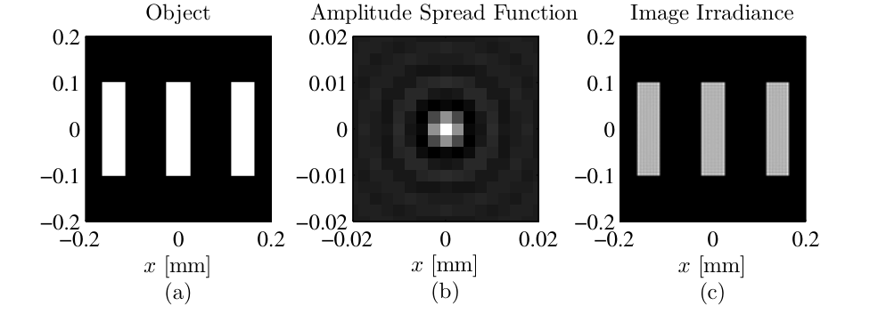
% Listing 5.4：example_coh_img.m（原书 26 行）
N = 256; % number of grid points per side
L = 0.1; % total size of the grid [m]
D = 0.07; % diameter of pupil [m]
delta = L / N; % grid spacing [m]
wvl = 1e-6; % optical wavelength [m]
z = 0.25; % image distance [m]
% pupil-plane coordinates
[x y] = meshgrid((-N/2 : N/2-1) * delta);
[theta r] = cart2pol(x, y);
% wavefront aberration
W = 0.05 * zernike(4, 2*r/D, theta);
% complex pupil function
P = circ(x, y, D) .* exp(i * 2*pi * W);
% amplitude spread function
h = ft2(P, delta);
delta_u = wvl * z / (N*delta);
% image-plane coordinates
[u v] = meshgrid((-N/2 : N/2-1) * delta_u);
% object (same coordinates as h)
obj = (rect((u-1.4e-4)/5e-5) + rect(u/5e-5) ...
+ rect((u+1.4e-4)/5e-5)) .* rect(v/2e-4);
% convolve the object with the ASF to simulate imaging
img = myconv2(obj, h, 1);
# 工程 2 的对应片段（h 按式 (5.29) 补上 1/(lambda zi) 因子）
W = 0.05 * zernike(4, 2 * r / D, theta) # 0.05 波 Zernike 离焦
P_ab = circle(x, y, D / 2) * np.exp(1j * 2 * np.pi * W) # 广义光瞳（式 5.1）
h_ab = ft2_centered(P_ab, delta) / lam_z # ASF（式 5.29）
delta_u = lam_z / (N * delta) # 像面采样
obj = (rect((u - 1.4e-4) / 5e-5) + rect(u / 5e-5)
+ rect((u + 1.4e-4) / 5e-5)) * rect(v / 2e-4)
img_coh = myconv2(obj, h_ab) # 式 (5.27)：场卷场
拓展：myconv2 与 h 的 1/(\(\lambda z_i\)) 因子
myconv2(obj, h, 1) 是原书 3.1 节定义的"线性卷积取中心"（该章 PDF 缺失，工程按 conv2(g,h,'same') 的居中语义实现：FFT 垫零到 \(N_g+N_h-1\) 做线性卷积再裁中间，偶数尺寸的裁切起点 \((K-N)/2\)，MATLAB 的 'same' 对偶尺寸方阵取同一批元素——工程 2 验证 0 实测两法最大差 \(1.8\times10^{-15}\)）。另外原书 Listing 5.⅘.5 的 h = ft2(P, delta) 没乘 \(1/(\lambda z_i)\)——形状与归一化显示完全不受影响，但绝对辐照度差 \(1/(\lambda z_i)^2\)；要绝对数值就按 (5.29) 补上（工程 2 已补，显示仍归一化）。
5.2.2 非相干成像#
非相干照明下线性性搬到了辐照度上：像的辐照度是物辐照度与 PSF 的卷积，
PSF 就是 ASF 的模平方，仅此而已。原书 Listing 5.5 与 Listing 5.4 几乎逐行相同（同物、同像差），只有最后一行换掉：
结果见图 5.6：同样 0.05 波离焦，非相干像的模糊形态与相干像不同（相干像的边缘有振铃——那是在卷积里干涉出来的；非相干像只是强度模糊）。
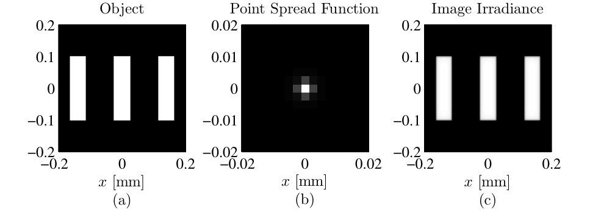
对 (5.35) 用卷积定理：
这次的滤波器定义成归一化形式——光学传递函数：
再往光瞳上追：用自相关定理与 Parseval 定理，可以把 (5.38) 改写成 \(\mathcal{P}\) 的自相关：
人话：OTF = 光瞳函数的归一化自相关。这一行是成像仿真里最实用的公式——不用先算 \(h\) 再变换，直接在光瞳上滑动自相关。原书接着给出圆孔（直径 \(D\)）的闭式：
其中 \(f = \sqrt{f_x^2+f_y^2}\)、\(f_0 = D/(2\lambda z_i)\)。三个要点：
- \(f_0\) 在相干情形是截频；非相干情形频率直到 \(2f_0\) 都能通过（带衰减）——非相干成像的带宽是相干的两倍；
- 但非相干像仍然严格带限（\(2f_0\) 之外严格为零）；
- 无像差圆孔的 \(H(f)\ge 0\) 处处成立——不像相干 ATF 那样可以是复值/负值。
工程 2 验证 3 把 (5.38)、(5.41)、(5.42) 三条路线放在同一张图上对过：\(|h|^2\) 的 FT 路线（路线 A）在干净频段（\(|f|\le(L-D)/\lambda z_i = 1.2\times10^5\ \mathrm{m^{-1}}\)）与解析式最大差 \(1.5\times10^{-4}\)，超出该频段就被循环卷积回绕污染（对照最大差 \(0.35\)）；光瞳自相关路线（路线 B，垫零到 \(2N\)）全程最大差 \(3.5\times10^{-4}\)；\(f = 2f_0\) 处 \(H = 4.9\times10^{-17}\)（截频确认），全频段最小值 \(-1.0\times10^{-16}\)（\(H\ge0\) 确认）。Parseval 顺手核掉：\(\sum|h|^2\,\delta_u^2 = 3.8503\times10^{-3} = \sum|\mathcal{P}|^2\delta^2\)（相对差 \(3.4\times10^{-16}\)）。
表 5.3 相干与非相干成像对比
| 相干照明 | 非相干照明 | |
|---|---|---|
| 线性量 | 光场 \(U\) | 辐照度 \(I\) |
| 脉冲响应 | ASF：\(h\)（式 5.29） | PSF：( |
| 传递函数 | ATF：\(\lambda z_i\,\mathcal{P}(-\lambda z_i f)\)（式 5.34，复值、不归一） | OTF：光瞳自相关归一（式 5.41，无像差圆孔 \(H\ge0\)） |
| 截频 | \(f_0 = D/(2\lambda z_i)\) | \(2 f_0\) |
| 带内传递 | 等幅（圆孔） | 递减（式 5.42） |
| 代码差别 | img = myconv2(obj, h, 1) |
img = myconv2(abs(obj).^2, abs(h).^2, 1) |
原书图 5.7 展示了 OTF 对像差的敏感：实线是无像差圆孔（式 5.42），点划线是孔径边缘 0.5 波离焦系统的 OTF（数值积分）——中频段衰减明显更狠。图 5-9(b) 是工程 2 的复现：解析式、光瞳自相关、\(|h|^2\) 的 FT 三条线重合，外加 0.05 波离焦的 OTF 作对照。
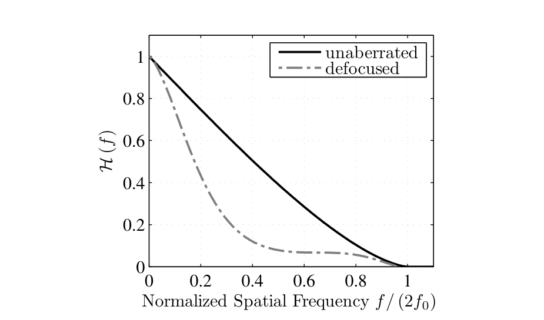
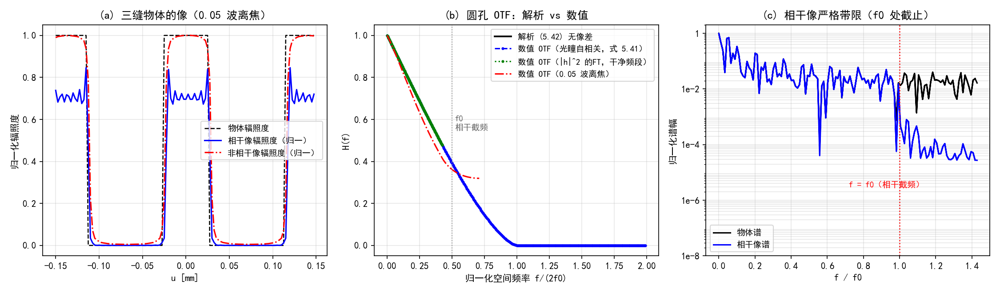
选路线的决策图：
graph TD
A["已知：振幅光瞳 P(x,y) + 波前差 W(x,y)"] --> B["广义光瞳 𝒫 = P·e^{i2πW}（式 5.1）<br/>ASF：h = ft2(𝒫)/(λz_i)（式 5.29）"]
B --> C{"照明空间相干吗？"}
C -- "相干" --> D["场线性：U_i = h ⊗ U_o（式 5.27）<br/>频域：ATF = λz_i·𝒫(−λz_i f)（式 5.34）<br/>截频 f₀"]
C -- "非相干" --> E["强度线性：I_i = |h|² ⊗ I_o（式 5.35）<br/>频域：OTF = 光瞳自相关归一（式 5.41）<br/>截频 2f₀（式 5.42）"]
D --> F{"要绝对辐照度吗？"}
E --> F
F -- "要" --> G["h 补 1/(λz_i) 因子<br/>（原书 Listing 5.4/5.5 省略了它）"]
F -- "只要形状/归一显示" --> H["原书写法即可"]
G --> I{"评价系统好坏"}
H --> I
I -- "小像差 σ_φ²≲1" --> J["Strehl：式 5.46 光瞳积分<br/>或 Maréchal 1−σ_φ² / 经验 e^{−σ_φ²}"]
I -- "大像差 / 全频段" --> K["仿真 PSF 峰值比 + OTF 曲线<br/>（Maréchal 在 σ_φ²>1 已失效）"]5.2.3 Strehl 比#
整幅 PSF 信息量大，但工程上常要一个数。最常用的是Strehl 比（Strehl ratio）：实际系统轴上 PSF 峰值与无像差系统轴上 PSF 峰值之比。轴上值由 (5.29) 在原点取模方：
非零相位全部来自像差（\(\mathcal{P}\) 的振幅部分就是无像差光瞳 \(P\)），所以
把像差相位写得显式些，并对偶地给出 OTF 形式（用 (5.30) 与 (5.38)，\(H_{dl}\) 是无像差/衍射受限系统的 OTF）：
(5.47) 有个漂亮的读法：Strehl = 实际 OTF 曲线下的面积比——图 5.7 里离焦把曲线压下去多少，轴上峰值就掉多少。无像差系统 \(S=1\)（上限）；像差与振幅变化（比如环形孔径）只会把它往下压——低 Strehl 意味着分辨率粗、对比度低。
小像差时 \(S\) 由光瞳相位的方差决定。把 (5.46) 缩写成幅度加权平均：
其中幅度加权平均相位
乘一个 \(|e^{-i\langle\phi\rangle}|^2 = 1\) 把均值挪进括号：
对 cos/sin 做 Taylor 展开取到二阶：
再乘开、只留前两项：
其中 \(\sigma_\phi^2 = 4\pi^2\sigma^2\) 是相位方差（rad²，\(\sigma\) 是以波计的 RMS 波前差）。(5.53)–(5.55) 是三个常用的近似版本——最后一个是把 (5.54) 换成指数形式：
原书特别注明：(5.53) 叫 Maréchal 公式；(5.55) 虽然看起来像 (5.54) 的 Taylor 前两项，实际是经验公式——对各种像差的数值结果拟合得最好。工程 2 用 0.05 波离焦实测了四个算法的吻合度：\(\sigma_W^2 = 0.0025\) 波² \(\to \sigma_\phi^2 = 0.0988\ \mathrm{rad^2}\)，PSF 峰值比 = 光瞳积分 (5.46) = 0.9050，Maréchal (5.54) 给 0.9012，经验式 (5.55) 给 0.9059——\(\sigma_\phi^2\approx0.1\) 时三者几乎重合。习题 4 会把 \(\sigma_\phi^2\) 拉到 0.46 再看分晓（经验式 0.6301 vs 仿真 0.6300，Maréchal 0.5381 已经跑偏）。
工程 2：相干与非相干成像（Listings 5.4–5.5 复现）#
对应文件 matlab/waveprop/ch5/ch5_imaging.m（Python 版在本 notebook 工程 2 cell）：
```matlab
%% ===== 书 Schmidt PM199 第 5 章 =====
% 相干与非相干成像：ASF/PSF 与 ATF/OTF（原书 5.2 节，Listings 5.4-5.5）
% 与 python/waveprop/第5章_代码实战.ipynb 工程 2 数值行为一致。
%
% 原书要点：
% 成像系统对光是线性系统，但"线性在哪个量上"取决于照明的相干性：
% 相干照明：场线性。U_i = h ⊗ U_o（式 5.27），振幅扩散函数（ASF）
% h = (1/(lambda zi)) F{P}（式 5.29/5.30）；
% 传递函数 H = F{h} = lambda zi * P(-lambda zi f)（式 5.34，
% lambda zi 因子正确：二维换元雅可比 lambda zi^2 抵消
% 1/(lambda zi) 后剩一个；H(0,0) = lambda zi，量纲 m^2）。
% 圆孔截频 f0 = D/(2 lambda zi)，像是严格带限的。
% 非相干照明：强度线性。I_i = |h|^2 ⊗ I_o（式 5.35），|h|^2 即 PSF；
% OTF：H = F{|h|^2} / ∫∫|h|^2 dudv（式 5.38）
% = 光瞳自相关 / ∫∫|P|^2 dxdy（式 5.40/5.41），
% 圆孔截频 2 f0（式 5.42），无像差时 H(f) >= 0。
% 波前像差只属于系统、与照明无关，但它对像的影响跟相干性有关。
% Strehl 比（5.2.3）：S = |∫∫ P e^{i phi} dxdy|^2 / |∫∫ P dxdy|^2（式 5.46），
% 小像差时 S ≈ 1 - sigma_phi^2（Maréchal，式 5.54）≈ exp(-sigma_phi^2)（式 5.55）。
%
% 验证（编号与 notebook 工程 2 一致）：
% (0) myconv2 正确性：FFT 线性卷积取中 vs conv2(g,h,'same')；
% (1) 书例复现：三缝物体 0.05 波离焦的相干像与非相干像（原书图 5.5/5.6）；
% (2) ATF 核对：F{h} 与 lambda zi*P(-lambda zi f) 逐点一致（式 5.34），
% 相干像谱 |f|>f0 泄漏（理想像严格带限，泄漏来自中心裁切窗）；
% (3) OTF 核对：无像差圆孔数值 OTF vs 解析式 (5.42)，两条数值路线
% （|h|^2 的 FT vs 光瞳自相关）在各自可信频段一致；截频 2f0；H>=0；
% (4) Strehl 四算法（0.05 波离焦）；
% (5) Parseval：sum|h|^2 du^2 = sum|P|^2 delta^2。
%
% MATLAB/Python 差异（对应 notebook 内注释）：
% - myconv2 用 FFT 垫零实现；对偶数尺寸方阵它与 conv2(g,h,'same') 取中
% 一致（full 卷积长 2N-1，'same' 的居中起点 = floor((K-N)/2)+1，与
% numpy 版 0-based (K-N)//2 取同一批元素）。
% - np.fft.fft2(g, (K,K)) 垫零 = MATLAB fft2(g, K, K)。
% - P(-lambda zi f) 样本 = circshift(rot90(P,2), [1 1])（flip+roll 对齐
% 偶数 N 的居中反转）。
% - cart2pol -> hypot/atan2。
clear; clc; close all;
%% ---- 原书 Listing 5.4/5.5 的参数 ----
N = 256; L = 0.1; D = 0.07;
delta = L / N; wvl = 1e-6; z = 0.25;
lam_z = wvl * z; % lambda zi（原书记号）
[x, y] = meshgrid((-N/2 : N/2-1) * delta);
r = hypot(x, y); theta = atan2(y, x);
apM = hypot(x, y) <= D/2; % circ(x,y,D) 半径参数版
%% 验证 0：myconv2 正确性
rng(1);
gs_ = randn(6); hs_ = randn(3);
ref = conv2(gs_, hs_, 'same');
got = real(myconv2(gs_, hs_));
fprintf('===== 验证 0：myconv2 vs conv2(same) =====\n');
fprintf(' max|myconv2 - conv2(same)| = %.2e\n', max(abs(got - ref), [], 'all'));
%% 验证 1 + 4：书例复现（0.05 波离焦）与 Strehl
W = 0.05 * zernike(4, 2*r/D, theta); % 0.05 波 Zernike 离焦
P_ab = apM .* exp(1i * 2*pi * W); % 广义光瞳（式 5.1）
P_dl = apM; % 无像差光瞳
h_ab = ft2(P_ab, delta) / lam_z; % ASF（式 5.29，补上 1/(lambda zi)）
h_dl = ft2(P_dl, delta) / lam_z;
delta_u = lam_z / (N*delta); % 像面采样 = lambda zi/(N delta)
u1d = (-N/2 : N/2-1) * delta_u;
[u, v] = meshgrid(u1d, u1d);
f0 = D / (2 * lam_z); % 相干截频
fprintf('===== 验证 1 + 4：书例复现（0.05 波离焦）与 Strehl =====\n');
fprintf(' delta_u = %.3f um；f0 = %.0f /m\n', delta_u*1e6, f0);
% 物体（Listing 5.4 第 22-23 行）：三条 50 um x 200 um 竖缝
obj = (rect((u-1.4e-4)/5e-5) + rect(u/5e-5) + rect((u+1.4e-4)/5e-5)) ...
.* rect(v/2e-4);
img_coh = myconv2(obj, h_ab); % 式 (5.27)：场卷场
img_inc = myconv2(abs(obj).^2, abs(h_ab).^2); % 式 (5.35)：强度卷强度
I_coh = abs(img_coh).^2;
I_inc = real(img_inc);
% Strehl（验证 4）：四种算法
S_pupil = abs(sum(P_ab, 'all'))^2 / abs(sum(P_dl, 'all'))^2; % 式 (5.46) 离散
S_psf = abs(h_ab(N/2+1, N/2+1))^2 / abs(h_dl(N/2+1, N/2+1))^2;
sig2_w = mean(W(apM).^2); % sigma^2（波^2）：Z4 单位 RMS -> 0.05^2
sig2_phi = (2*pi)^2 * sig2_w;
fprintf(' 0.05 波 Z4 离焦：sigma_W^2 = %.4f 波^2 -> sigma_phi^2 = %.4f rad^2\n', ...
sig2_w, sig2_phi);
fprintf(' Strehl：PSF 峰值比 = %.4f = 光瞳积分（式 5.46）%.4f\n', S_psf, S_pupil);
fprintf(' Marechal 1-sigma_phi^2（式 5.54）= %.4f\n', 1 - sig2_phi);
fprintf(' 经验 exp(-sigma_phi^2)（式 5.55）= %.4f\n', exp(-sig2_phi));
%% 验证 2：ATF（式 5.34）+ 相干像带限
fx1d = (-N/2 : N/2-1) / (N * delta_u); % 像面原生频率轴（lambda zi*f = x）
[FX, ~] = meshgrid(fx1d, fx1d);
H_num = ft2(h_ab, delta_u);
P_roll = circshift(rot90(P_ab, 2), [1 1]); % P(-lambda zi f) 样本
dATF = max(abs(H_num - lam_z * P_roll), [], 'all');
fprintf('===== 验证 2：ATF（式 5.34）+ 相干像带限 =====\n');
fprintf(' max|F{h} - lambda zi*P(-lambda zi f)| = %.2e（相对峰值 %.1e）\n', ...
dATF, dATF / max(abs(H_num), [], 'all'));
fprintf(' DC 值 H(0) = lambda zi = %.2e m^2（相干 ATF 不归一；OTF 才归一到 1）\n', ...
abs(H_num(N/2+1, N/2+1)));
F_img = ft2(img_coh, delta_u);
beyond = hypot(FX, FY) > f0 * 1.001;
fprintf(' 相干像谱 |f|>f0 泄漏/峰 = %.1e（理想像严格带限，泄漏来自中心裁切窗）\n', ...
max(abs(F_img(beyond)), [], 'all') / max(abs(F_img), [], 'all'));
%% 验证 3：OTF（式 5.38/5.41/5.42）
otfA = real(ft2(abs(h_dl).^2, delta_u)) / (sum(abs(h_dl).^2, 'all') * delta_u^2);
Fp = fft2(P_dl, 2*N, 2*N); % 垫零到 2N：位移轴可达 ±L
ac = fftshift(real(ifft2(abs(Fp).^2))) * delta^2;
xs = (-N : N-1) * delta; % 位移轴：-L .. L-delta（居中）
fx2 = xs / lam_z;
otfB = ac(N+1, :) / (sum(abs(P_dl).^2, 'all') * delta^2); % fy=0 切片
% 解析式 (5.42)
otf_ana = @(f) (f <= 2*f0) .* (2/pi) .* ...
(acos(min(max(f./(2*f0), 0), 1)) - (f./(2*f0)) .* sqrt(max(1 - (f./(2*f0)).^2, 0)));
% 路线 A 的可信频段：|h|^2 的 DFT 是循环自相关，|f| > (L-D)/(lambda zi) 即回绕
f_clean = (L - D) / lam_z;
fa = linspace(0, 1.99*2*f0, 400);
faA = linspace(0, 0.99*f_clean, 200);
posF = fx1d >= 0;
interpA = interp1(fx1d(posF), otfA(N/2+1, posF), faA, 'linear', 'extrap');
interpB = interp1(fx2(fx2 >= 0), otfB(fx2 >= 0), fa, 'linear', 'extrap');
ana = otf_ana(fa);
anaA = otf_ana(faA);
fprintf('===== 验证 3：OTF（式 5.38/5.41/5.42） =====\n');
fprintf(' 无像差圆孔 fy=0：路线A vs 解析(5.42) 干净频段（|f|<=%.2e）最大差 %.2e\n', ...
f_clean, max(abs(interpA - anaA)));
fprintf(' 路线A 超出该频段即循环回绕（对照最大差 %.2e）；路线B（垫零线性自相关）全程最大差 %.2e\n', ...
max(abs(interp1(fx1d(posF), otfA(N/2+1, posF), fa, 'linear', 'extrap') - ana)), ...
max(abs(interpB - ana)));
fprintf(' DC 归一：otfA(0)=%.6f，otfB(0)=%.6f（式 5.38 分母 = h 的能量）\n', ...
otfA(N/2+1, N/2+1), otfB(N+1));
fprintf(' 路线B 在 f=2f0 处 H=%.2e（截频确认）；全频段最小值 %.2e（H>=0）\n', ...
interp1(fx2(fx2 >= 0), otfB(fx2 >= 0), 2*f0), min(otfB));
% 离焦系统的 OTF（0.05 波）——原书图 5.7 用 0.5 波展示衰减，思路相同
otf_ab = real(ft2(abs(h_ab).^2, delta_u)) / (sum(abs(h_ab).^2, 'all') * delta_u^2);
%% 验证 5：Parseval（h 与 P 能量守恒）
Eh = sum(abs(h_ab).^2, 'all') * delta_u^2;
Ep = sum(abs(P_ab).^2, 'all') * delta^2;
fprintf('===== 验证 5：Parseval =====\n');
fprintf(' sum|h|^2 du^2 = %.6e vs sum|P|^2 delta^2 = %.6e（相对差 %.2e）\n', ...
Eh, Ep, abs(Eh - Ep)/Ep);
%% 绘图：图 5-9（自绘：像对比 + OTF 曲线 + 像谱带限）
sl = N/2 + (-60 : 59); % ±150 um 窗口（1-based）
figure('Position', [40 40 1500 440]);
subplot(1, 3, 1);
plot(u(1, sl)*1e3, obj(N/2+1, sl), 'k--', 'LineWidth', 1.2); hold on;
plot(u(1, sl)*1e3, I_coh(N/2+1, sl)/max(I_coh, [], 'all')*max(obj, [], 'all'), 'b-');
plot(u(1, sl)*1e3, I_inc(N/2+1, sl)/max(I_inc, [], 'all')*max(obj, [], 'all'), 'r-.');
xlabel('u [mm]'); ylabel('归一化辐照度'); grid on;
title('(a) 三缝物体的像（0.05 波离焦）');
legend({'物体辐照度', '相干像辐照度（归一）', '非相干像辐照度（归一）'}, 'FontSize', 8);
subplot(1, 3, 2);
plot(fa/(2*f0), ana, 'k-', 'LineWidth', 1.8); hold on;
plot(fa/(2*f0), interpB, 'b.--', 'MarkerSize', 4);
plot(faA/(2*f0), interpA, 'g.:', 'MarkerSize', 4);
posO = fx1d >= 0;
plot(fx1d(posO)/(2*f0), otf_ab(N/2+1, posO), 'r-.');
xline(f0/(2*f0), ':', 'Color', [0.6 0.6 0.6]);
xlabel('归一化空间频率 f/(2f0)'); ylabel('H(f)'); grid on;
title('(b) 圆孔 OTF：解析 vs 数值');
legend({'解析 (5.42) 无像差', '数值 OTF（光瞳自相关，式 5.41）', ...
'数值 OTF（|h|^2 的FT，干净频段）', '数值 OTF（0.05 波离焦）'}, 'FontSize', 8);
ylim([-0.05 1.05]);
subplot(1, 3, 3);
F_obj = ft2(obj, delta_u);
semilogy(abs(fx1d)/f0, abs(F_obj(N/2+1, :))/max(abs(F_obj), [], 'all'), 'k-'); hold on;
semilogy(abs(fx1d)/f0, abs(F_img(N/2+1, :))/max(abs(F_img), [], 'all'), 'b-');
xline(1.0, 'r:');
xlabel('f / f0'); ylabel('归一化谱幅'); grid on;
title('(c) 相干像严格带限（f0 处截止）');
legend({'物体谱', '相干像谱'}, 'FontSize', 8, 'Location', 'southwest');
ylim([1e-8 2]);
%% ===== 本地函数 =====
function C = myconv2(g, h)
% myconv2(g, h, 1) 的语义（原书 3.1 节，该章 PDF 缺失）：全尺寸线性卷积后
% 取与 g 同尺寸的中心部分。FFT 实现：垫零到 (Ng+Nh-1) 避免循环卷积回绕，
% 再裁中间。偶数尺寸对齐：0-based 起点 (K-Ng)//2，1-based 即 (K-Ng)//2+1，
% 与 conv2(g,h,'same') 对偶数尺寸方阵取中一致。
Ng = size(g, 1);
K = Ng + size(h, 1) - 1;
full = ifft2(fft2(g, K, K) .* fft2(h, K, K));
s0 = (K - Ng)/2 + 1; % 1-based 裁切起点
C = full(s0:s0+Ng-1, s0:s0+Ng-1);
end
function G = ft2(g, delta)
% 原书 Listing 2.5：定标正确的二维 DFT（乘 delta^2）
G = fftshift(fft2(fftshift(g))) * delta^2;
end
function s = rect(x)
% rect(x)：|x|<1/2 取 1，|x|=1/2 取 1/2，其余 0
s = double(abs(x) < 1/2) + 0.5*double(abs(x) == 1/2);
end
function Z = zernike(i, r, theta)
% Noll 单指标 Zernike（m=0 分支已按勘误补 sqrt(n+1)）；与 ch5_zernike.m 相同
[n, m] = zidx(i);
R = zrf(n, m, r);
if m == 0
Z = sqrt(n+1) * R;
elseif mod(i, 2) == 0
Z = sqrt(2*(n+1)) * R .* cos(m*theta);
else
Z = sqrt(2*(n+1)) * R .* sin(m*theta);
end
end
function R = zrf(n, m, r)
% Zernike 径向多项式（式 5.5a，阶乘用 gamma 实现）
R = zeros(size(r));
for s = 0:(n-m)/2
num = (-1)^s * gamma(n - s + 1);
den = gamma(s+1) * gamma((n+m)/2 - s + 1) * gamma((n-m)/2 - s + 1);
R = R + num / den * r.^(n - 2*s);
end
end
function [n, m] = zidx(i)
% 表 5.2 的 (i,n,m) 映射（Noll 单指标）；与 ch5_zernike.m 相同
persistent rows
if isempty(rows)
rows = zeros(0, 2);
for n0 = 0:40
for m0 = mod(n0, 2):2:n0
rows(end+1, :) = [n0, m0]; %#ok<AGROW>
if m0 > 0
rows(end+1, :) = [n0, m0]; %#ok<AGROW>
end
end
end
end
n = rows(i, 1);
m = rows(i, 2);
end
```python
# -*- coding: utf-8 -*-
"""
===== 书 Schmidt PM199 第 5 章相干与非相干成像：ASF/PSF 与 ATF/OTF（原书 5.2 节，Listings 5.4-5.5）
原书要点：
成像系统对光是线性系统，但"线性在哪个量上"取决于照明的相干性：
相干照明：场线性。U_i = h ⊗ U_o（式 5.27），振幅扩散函数
h = (1/(lambda zi)) F{P}（式 5.29/5.30）；
传递函数 H = F{h} = lambda zi * P(-lambda zi f)（式 5.34，
lambda zi 因子正确：二维换元雅可比 lambda zi^2 抵消
1/(lambda zi) 后剩一个；H(0,0) = lambda zi，量纲 m^2）。
圆孔截频 f0 = D/(2 lambda zi)，像是严格带限的。
非相干照明：强度线性。I_i = |h|^2 ⊗ I_o（式 5.35），|h|^2 即 PSF；
OTF：H = F{|h|^2} / ∫∫|h|^2 dudv（式 5.38）
= 光瞳自相关 / ∫∫|P|^2 dxdy（式 5.40/5.41），
圆孔截频 2 f0（式 5.42），无像差时 H(f) >= 0。
波前像差只属于系统、与照明无关，但它对像的影响跟相干性有关。
Strehl 比（5.2.3）：S = |∫∫ P e^{i phi} dxdy|^2 / |∫∫ P dxdy|^2（式 5.46），
小像差时 S ≈ 1 - sigma_phi^2（Maréchal，式 5.54）≈ exp(-sigma_phi^2)（经验，式 5.55）。
数值验证（运行本脚本全部自动打印）：
(0) myconv2 正确性：小随机阵列 vs scipy.signal.convolve2d（线性卷积取中心）；
(1) 书例复现（Listings 5.4-5.5）：三缝物体的相干像与非相干像
（0.05 波 Zernike 离焦，原书图 5.5/5.6）；
(2) ATF 核对：F{h} 与 lambda zi * P(-lambda zi f) 逐点一致（式 5.34），
相干像谱在 |f| > f0 的泄漏（理想像严格带限，离散实现有窗泄漏）；
(3) OTF 核对：无像差圆孔的数值 OTF vs 解析式 (5.42)，两条数值路线
（|h|^2 的 FT vs 光瞳自相关，式 5.38 vs 5.41）在重叠频段一致；
截频 2f0 与 H(f) >= 0；
(4) Strehl：0.05 波离焦的 PSF 峰值比 vs 光瞳积分（式 5.46）
vs Marechal（式 5.54）vs 经验 exp（式 5.55）；
(5) Parseval：sum |h|^2 du^2 = sum |P|^2 delta^2（h 与 P 能量守恒）。
myconv2 说明：原书 3.1 节定义（该章 PDF 缺失），按"线性卷积后取与物体同尺寸
的中心部分"实现（即 conv2(g,h,'same') 的居中语义，第三参数=1 的调用约定
与原书一致）；偶数尺寸的中心对齐起点 start=(K-N)//2（0-based）。
h 的定标说明：式 (5.29) 的 h 带 1/(lambda zi) 因子；原书 Listing 5.4/5.5
的 h = ft2(P, delta) 未乘（像的绝对辐照度因此差 1/(lambda zi)^2，形状与
归一化显示不受影响）。本工程按式 (5.29) 补上，显示仍做归一化。
MATLAB/Python 差异（对应 .m 文件内注释）：
- np.fft.fft2(g, s=(K,K)) 零填充，与 MATLAB fft2(g,K,K) 一致。
- 居中裁切起点：MATLAB 1-based start=(K-N)//2+1，numpy 0-based (K-N)//2，
取同一批元素。
- cart2pol -> np.hypot / np.arctan2。
用法：python ch5_imaging.py <输出目录> 保存 PNG；否则弹窗显示。
依赖：numpy + matplotlib + scipy；base.py（circle/rect/ft2_centered）；
ch5_zernike.py（同目录，zernike）。
"""
import os
import sys
import numpy as np
import matplotlib.pyplot as plt
from scipy.signal import convolve2d
plt.rcParams['font.sans-serif'] = ['SimHei', 'Microsoft YaHei', 'Arial Unicode MS']
plt.rcParams['axes.unicode_minus'] = False
# ---- 复用《计算傅里叶光学》笔记的公共基础模块（同仓库） ----
sys.path.insert(0, os.path.join(os.path.dirname(os.path.abspath(__file__)),
"..", "..", "fourier", "common"))
from base import circle, rect, ft2_centered # noqa: E402
# zernike 在本 notebook 第一个代码 cell（工程 1）中定义，按顺序运行即可；
# 拆回独立 .py 文件时改用：from ch5_zernike import zernike
# ===== 书 3.1 节：myconv2（线性卷积 + 居中裁切，这里补实现） =====
def myconv2(g, h):
"""myconv2(g, h, 1) 的语义：全尺寸线性卷积后取与 g 同尺寸的中心部分。
FFT 实现：零填充到 (Ng+Nh-1) 做线性卷积（避免循环卷积回绕），
再裁中间 Ng×Ng。偶数尺寸对齐：裁切起点 start=(K-Ng)//2（0-based），
与 MATLAB 版 start=(K-Ng)//2+1（1-based）取同一批元素。
"""
Ng = g.shape[0]
K = Ng + h.shape[0] - 1
full = np.fft.ifft2(np.fft.fft2(g, (K, K)) * np.fft.fft2(h, (K, K)))
start = (K - Ng) // 2
return full[start:start + Ng, start:start + Ng]
def main(outdir=None):
# ---- 原书 Listing 5.4/5.5 的参数 ----
N = 256 # number of grid points per side
L = 0.1 # total size of the grid [m]
D = 0.07 # diameter of pupil [m]
delta = L / N # grid spacing [m]
wvl = 1e-6 # optical wavelength [m]
z = 0.25 # image distance [m]
lam_z = wvl * z # lambda zi [m^2]（注意是乘积，原书记号 lambda zi）
# pupil-plane coordinates
x, y = np.meshgrid((np.arange(N) - N // 2) * delta,
(np.arange(N) - N // 2) * delta)
r = np.hypot(x, y)
theta = np.arctan2(y, x)
ap_mask = circle(x, y, D / 2) > 0
print('===== 验证 0：myconv2 正确性（小随机阵列 vs scipy） =====')
rng = np.random.default_rng(1)
gs_, hs_ = rng.standard_normal((6, 6)), rng.standard_normal((3, 3))
ref = convolve2d(gs_, hs_, mode='same', boundary='fill') # 奇数核：居中无歧义
got = myconv2(gs_, hs_).real
print(' max|myconv2 - convolve2d(same)| = %.2e' % np.max(np.abs(got - ref)))
print('===== 验证 1 + 4：书例复现（0.05 波离焦）与 Strehl =====')
W = 0.05 * zernike(4, 2 * r / D, theta) # 0.05 波 Zernike 离焦
P_ab = circle(x, y, D / 2) * np.exp(1j * 2 * np.pi * W) # 广义光瞳（式 5.1）
P_dl = circle(x, y, D / 2).astype(complex) # 无像差光瞳
# 振幅扩散函数（式 5.29）：h = ft2(P, delta)/(lambda zi)
h_ab = ft2_centered(P_ab, delta) / lam_z
h_dl = ft2_centered(P_dl, delta) / lam_z
delta_u = lam_z / (N * delta) # 像面采样 = lambda zi/(N delta)
u1d = (np.arange(N) - N // 2) * delta_u
u, v = np.meshgrid(u1d, u1d)
f0 = D / (2 * lam_z) # 相干截频
print(' delta_u = lambda zi/(N*delta) = %.3f um；f0 = D/(2 lambda zi) = %.0f /m'
% (delta_u * 1e6, f0))
# 物体（Listing 5.4 第 22-23 行）：三条 50 um x 200 um 竖缝
obj = (rect((u - 1.4e-4) / 5e-5) + rect(u / 5e-5)
+ rect((u + 1.4e-4) / 5e-5)) * rect(v / 2e-4)
img_coh = myconv2(obj, h_ab) # 式 (5.27)：场卷场
img_inc = myconv2(np.abs(obj) ** 2, np.abs(h_ab) ** 2) # 式 (5.35)：强度卷强度
I_coh = np.abs(img_coh) ** 2
I_inc = img_inc.real
# Strehl（验证 4）：四种算法
S_pupil = np.abs(np.sum(P_ab)) ** 2 / np.abs(np.sum(P_dl)) ** 2 # 式 (5.46) 离散
S_psf = np.abs(h_ab[N // 2, N // 2]) ** 2 / np.abs(h_dl[N // 2, N // 2]) ** 2
sig2_w = np.mean(W[ap_mask] ** 2) # sigma^2（波^2）：Z4 单位 RMS -> 0.05^2
sig2_phi = (2 * np.pi) ** 2 * sig2_w # sigma_phi^2（rad^2）
print(' 0.05 波 Z4 离焦：sigma_W^2 = %.4f 波^2 -> sigma_phi^2 = %.4f rad^2'
% (sig2_w, sig2_phi))
print(' Strehl：PSF 峰值比 = %.4f = 光瞳积分（式 5.46）%.4f'
% (S_psf, S_pupil))
print(' Marechal 1-sigma_phi^2（式 5.54）= %.4f' % (1 - sig2_phi))
print(' 经验 exp(-sigma_phi^2)（式 5.55）= %.4f' % np.exp(-sig2_phi))
print('===== 验证 2：ATF（式 5.34）+ 相干像带限 =====')
# H(f) = F{h}，在像面原生频率网格上采样：f = (n-N/2)/(N du)，
# 该网格与光瞳坐标一一对应：lambda zi * f = x（居中排列，间隔 delta）
fx, fy = np.meshgrid((np.arange(N) - N // 2) / (N * delta_u),
(np.arange(N) - N // 2) / (N * delta_u))
H_num = ft2_centered(h_ab, delta_u)
P_roll = np.roll(P_ab[::-1, ::-1], (1, 1), axis=(0, 1)) # P(-lambda zi f) 样本
print(' max|F{h} - lambda zi * P(-lambda zi f)| = %.2e（相对峰值 %.1e）'
% (np.max(np.abs(H_num - lam_z * P_roll)),
np.max(np.abs(H_num - lam_z * P_roll)) / np.max(np.abs(H_num))))
print(' DC 值 H(0) = lambda zi = %.2e m^2（相干 ATF 不归一；OTF 才归一到 1）'
% abs(H_num[N // 2, N // 2]))
# 相干像严格带限：|f| > f0 处理想像谱为 0；离散实现有有限窗泄漏
F_img = ft2_centered(img_coh, delta_u)
beyond = np.hypot(fx, fy) > f0 * 1.001
print(' 相干像谱 |f|>f0 泄漏/峰 = %.1e（理想像严格带限，泄漏来自'
'myconv2 的中心裁切窗）' % (np.max(np.abs(F_img[beyond]))
/ np.max(np.abs(F_img))))
print('===== 验证 3：OTF（式 5.38/5.41/5.42） =====')
# 路线 A：OTF = F{|h|^2}/(sum|h|^2 du^2)（像面网格，最高频率 1/(2 du) = 1.43 f0）
otfA = ft2_centered(np.abs(h_dl) ** 2, delta_u).real \
/ (np.sum(np.abs(h_dl) ** 2) * delta_u ** 2)
# 路线 B：光瞳自相关（式 5.41），垫零后位移轴 ±L -> 频率可达 L/(lambda zi) = 4e5 > 2f0
Fp = np.fft.fft2(P_dl, (2 * N, 2 * N))
ac = np.fft.fftshift(np.fft.ifft2(np.abs(Fp) ** 2)).real * delta ** 2
xs = (np.arange(2 * N) - N) * delta # 位移轴：-L .. L-delta（居中）
fx2 = xs / lam_z
otfB = ac[N, :] / (np.sum(np.abs(P_dl) ** 2) * delta ** 2) # fy=0 切片
def otf_analytic(f): # 解析式 (5.42)
out = np.zeros_like(np.asarray(f, dtype=float))
m = f <= 2 * f0
s = f[m] / (2 * f0)
out[m] = 2 / np.pi * (np.arccos(s) - s * np.sqrt(1 - s ** 2))
return out
# 路线 A 的可信频段：|h|^2 的 DFT 是 |h|^2 样本的"循环"自相关，位移超过
# L-D（光瞳外仍有网格）就回绕 -> OTF 只在 |f| <= (L-D)/(lambda zi) 内干净
f_clean = (L - D) / lam_z
fa = np.linspace(0, 1.99 * 2 * f0, 400)
faA = np.linspace(0, 0.99 * f_clean, 200)
interpA = np.interp(faA, fx[0, fx[0] >= 0], otfA[N // 2, fx[0] >= 0])
interpB = np.interp(fa, fx2[fx2 >= 0], otfB[fx2 >= 0])
ana = otf_analytic(fa)
anaA = otf_analytic(faA)
print(' 无像差圆孔 fy=0：路线A vs 解析(5.42) 在干净频段（|f|<=%.2e）最大差 %.2e'
% (f_clean, np.max(np.abs(interpA - anaA))))
print(' 路线A 超出该频段即被循环卷积回绕污染（对照最大差 %.2e）；'
'路线B（垫零线性自相关）全程最大差 %.2e'
% (np.max(np.abs(np.interp(fa, fx[0, fx[0] >= 0],
otfA[N // 2, fx[0] >= 0]) - ana)),
np.max(np.abs(interpB - ana))))
print(' DC 归一：otfA(0)=%.6f，otfB(0)=%.6f（式 5.38 分母 = h 的能量）'
% (otfA[N // 2, N // 2], otfB[N]))
print(' 路线B 在 f=2f0 处 H=%.2e（截频确认）；全频段最小值 %.2e（H>=0）'
% (np.interp(2 * f0, fx2[fx2 >= 0], otfB[fx2 >= 0]), otfB.min()))
# 离焦系统的 OTF（0.05 波）——原书图 5.7 用 0.5 波展示衰减，思路相同
otf_ab = ft2_centered(np.abs(h_ab) ** 2, delta_u).real \
/ (np.sum(np.abs(h_ab) ** 2) * delta_u ** 2)
print('===== 验证 5：Parseval（h 与 P 能量守恒） =====')
Eh = np.sum(np.abs(h_ab) ** 2) * delta_u ** 2
Ep = np.sum(np.abs(P_ab) ** 2) * delta ** 2
print(' sum|h|^2 du^2 = %.6e vs sum|P|^2 delta^2 = %.6e（相对差 %.2e）'
% (Eh, Ep, abs(Eh - Ep) / Ep))
# ---- 绘图：图 5-9（自绘：像对比 + OTF 曲线 + 像谱带限） ----
sl = slice(N // 2 - 60, N // 2 + 60) # ±150 um 窗口
fig, axs = plt.subplots(1, 3, figsize=(15, 4.4))
ax = axs[0]
ax.plot(u[0, sl] * 1e3, obj[N // 2, sl], 'k--', linewidth=1.2, label='物体辐照度')
ax.plot(u[0, sl] * 1e3, I_coh[N // 2, sl] / I_coh.max() * obj.max(),
'b-', label='相干像辐照度（归一）')
ax.plot(u[0, sl] * 1e3, I_inc[N // 2, sl] / I_inc.max() * obj.max(),
'r-.', label='非相干像辐照度（归一）')
ax.set_xlabel('u [mm]'); ax.set_ylabel('归一化辐照度'); ax.grid(alpha=0.3)
ax.set_title('(a) 三缝物体的像（0.05 波离焦）'); ax.legend(fontsize=9)
ax = axs[1]
ax.plot(fa / (2 * f0), ana, 'k-', linewidth=1.8, label='解析 (5.42) 无像差')
ax.plot(fa / (2 * f0), interpB, 'b.--', markersize=4,
label='数值 OTF（光瞳自相关，式 5.41）')
ax.plot(faA / (2 * f0), interpA, 'g.:', markersize=4,
label='数值 OTF（|h|^2 的FT，干净频段）')
pos = fx[0] >= 0
ax.plot(fx[0, pos] / (2 * f0), otf_ab[N // 2, pos], 'r-.',
label='数值 OTF（0.05 波离焦）')
ax.axvline(f0 / (2 * f0), color='0.6', linestyle=':', linewidth=1)
ax.text(f0 / (2 * f0) + 0.02, 0.55, 'f0\n相干截频', fontsize=9, color='0.4')
ax.set_xlabel('归一化空间频率 f/(2f0)'); ax.set_ylabel('H(f)')
ax.set_title('(b) 圆孔 OTF：解析 vs 数值'); ax.grid(alpha=0.3)
ax.legend(fontsize=9); ax.set_ylim(-0.05, 1.05)
ax = axs[2]
F_obj = ft2_centered(obj, delta_u)
ax.semilogy(np.abs(fx[0]) / f0, np.abs(F_obj[N // 2, :]) / np.abs(F_obj).max(),
'k-', label='物体谱')
ax.semilogy(np.abs(fx[0]) / f0,
np.abs(F_img[N // 2, :]) / np.abs(F_img).max(),
'b-', label='相干像谱')
ax.axvline(1.0, color='r', linestyle=':', linewidth=1.2)
ax.text(0.72, 3e-6, 'f = f0（相干截频）', fontsize=9, color='r')
ax.set_ylim(1e-8, 2)
ax.set_yticks([1e0, 1e-2, 1e-4, 1e-6, 1e-8])
ax.set_yticklabels(['1', '1e-2', '1e-4', '1e-6', '1e-8'])
ax.set_xlabel('f / f0'); ax.set_ylabel('归一化谱幅')
ax.set_title('(c) 相干像严格带限（f0 处截止）')
ax.grid(alpha=0.3, which='both'); ax.legend(fontsize=9, loc='lower left')
fig.tight_layout()
if outdir:
fp = os.path.join(outdir, 'fig-5-9.png')
fig.savefig(fp, dpi=150)
print(' 已保存 %s' % fp)
else:
plt.show()
if __name__ == '__main__':
main(sys.argv[1] if len(sys.argv) > 1 else None)
工程 2 实跑输出（Python）： myconv2 vs conv2('same')/scipy 最大差 \(1.8\times10^{-15}\)；\(\delta_u = 2.500\ \mu\mathrm m\)、\(f_0 = 1.4\times10^5\ \mathrm{m^{-1}}\)；0.05 波离焦 \(\sigma_W^2 = 0.0025 \to \sigma_\phi^2 = 0.0988\)，Strehl 峰值比 = 光瞳积分 = 0.9050，Maréchal 0.9012、经验式 0.9059；ATF 核对最大差 \(2.3\times10^{-22}\)（相对 \(9.1\times10^{-16}\)），\(H(0) = 2.50\times10^{-7}\ \mathrm{m^2}\)；相干像谱 \(|f|>f_0\) 泄漏 \(1.1\times10^{-3}\)（中心裁切窗所致）；OTF 路线 A 干净频段最大差 \(1.5\times10^{-4}\)（回绕区 \(3.5\times10^{-1}\)）、路线 B 全程 \(3.5\times10^{-4}\)，\(2f_0\) 处 \(H = 4.9\times10^{-17}\)、全频段最小 \(-1.0\times10^{-16}\)；Parseval \(3.8503\times10^{-3}\) 两侧一致（\(3.4\times10^{-16}\)）。
5.3 习题#
原书 6 道习题全部数值复做（工程 3），下面每题给"配方 + 实测"。PSF 的统一算法与 5.2.1 的 ASF 相同：\(\mathrm{PSF} = |\texttt{ft2}(\mathcal{P}, \delta)|^2\)（平面波入射 → 焦面，即点物的相干像强度）。
习题 1（BK7 色散与三波长焦斑）。Sellmeier 方程把折射率写成波长的经验函数：
每种玻璃有自己的系数组 \((B_i, C_i)\)。BK7（硼硅冕牌玻璃）的 Schott 手册系数为 \(B = [1.03961212,\ 0.231792344,\ 1.01046945]\)、\(C = [0.00600069867,\ 0.0200179144,\ 103.560653]\)（\(\lambda\) 以 \(\mu\mathrm m\) 计）。三个标准谱线：
实测：\(n_F = 1.522377\)、\(n_d = 1.516800\)、\(n_C = 1.514322\)——与手册六位值逐位吻合；阿贝数 \(V_d = (n_d - 1)/(n_F - n_C) = 64.12\)（BK7 标准 64.17，六位舍入所致）。平凸薄透镜（凸面半径 \(R = 51.68\ \mathrm{mm}\)、直径 \(12.7\ \mathrm{mm}\)）的焦距 \(f = R/(n-1)\)：F/d/C 三波长分别 98.932 / 100.000 / 100.482 mm——\(R=51.68\) 这个设计值让 d 光焦距正好 100 mm；衍射受限焦斑直径（第一暗环）\(2.44\lambda f/D\) 分别 9.24 / 11.29 / 12.67 \(\mu\mathrm m\)。按 5.2.1 的配方（\(N=1024\)、\(\delta = 0.199\ \mathrm{mm}\)）算三波长零离焦 PSF 切片：半高全宽 3.78 / 4.61 / 5.18 μm，焦斑随波长变红而变宽（图 5-10 上排）；d 光加 0 / 0.125 / 0.25 / 0.5 波离焦，峰值跌到 1.0000 / 0.5172 / 0.0704 / 0.0189（图 5-10 下排）——0.125 波就把峰值腰斩，离焦是成像的大敌（\(\sigma_\phi^2 = (2\pi\times0.125)^2 = 0.617\)，Maréchal 已进入失效区）。
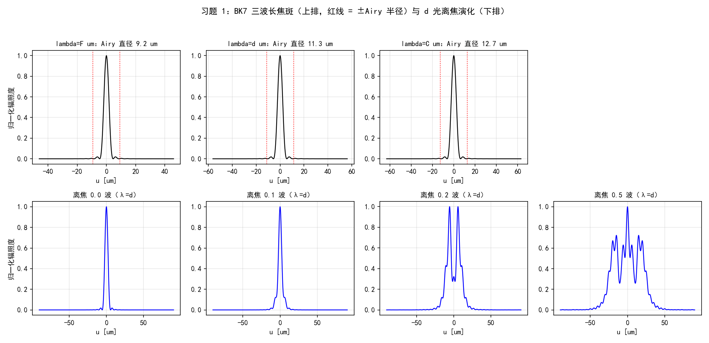
习题 ⅔（像散、球差加离焦的焦斑演化）。1 波初级像散（\(i=6\)）与 1 波初级球差（\(i=11\)）各加 \(-2,-1,0,+1,+2\) 波离焦，参数 \(L=4\ \mathrm m\)、\(D=2\ \mathrm m\)、\(N=512\)、\(\lambda=1\ \mu\mathrm m\)、\(f=16\ \mathrm m\)。PSF 峰值比实测：
| 加离焦（波） | 像散 \(i=6\) | 球差 \(i=11\) |
|---|---|---|
| \(-2.0\) | 0.0010 | 0.0296 |
| \(-1.0\) | 0.0096 | 0.0348 |
| \(0.0\) | 0.0070 | 0.0469 |
| \(+1.0\) | 0.0096 | 0.0345 |
| \(+2.0\) | 0.0010 | 0.0297 |
两个值得盯住的形态（图 5-11）：像散在零离焦处聚焦成两条焦线，加 ±1 波离焦反而略抬峰值（0.0070 → 0.0096）——离焦把两条焦线往中间拉，部分补偿了像散的结构；球差则是在零离焦处最接近"最佳焦面"（0.0469），±离焦单调变差。1 波像差的 \(\sigma_\phi^2 = 4\pi^2 \approx 39.5\ \mathrm{rad^2}\)，Maréchal/经验式早已失效（给出负数/\(10^{-17}\)），这些数字只能靠仿真——Strehl 近似式的适用边界在此一目了然。
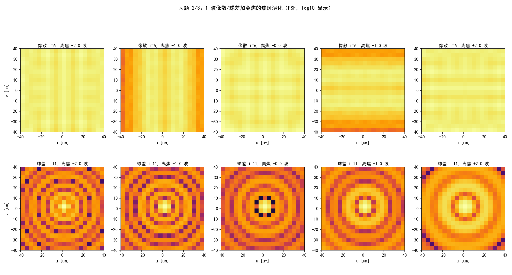
习题 4（五阶混合像差的 Strehl）。给定
参数 \(L=8\ \mathrm m\)、\(D=2\ \mathrm m\)、\(N=512\)、\(\lambda=1\ \mu\mathrm m\)、\(f=64\ \mathrm m\)。由 (5.26)：\(\sigma^2 = 0.07^2+0.05^2+0.05^2+0.03^2+0.03^2 = 0.0117\) 波²，\(\sigma_\phi^2 = 4\pi^2\times0.0117 = 0.4619\ \mathrm{rad^2}\)。四个算法正面碰头：
| 算法 | \(S\) |
|---|---|
| (a) 式 (5.26) + Maréchal (5.54) | 0.5381 |
| (a) 式 (5.26) + 经验式 (5.55) | 0.6301 |
| (b) 光瞳积分（式 5.46，离散求和） | 0.6300 |
| (b) 仿真 PSF 峰值比（类比 5.2.1） | 0.6300 |
结论与原书说法严丝合缝：\(\sigma_\phi^2\approx0.46\) 已超出 Maréchal 线性区的舒适范围（偏差 0.09），而经验指数式 (5.55) 与两次独立仿真只差 \(10^{-4}\)——"它对各种像差的数值结果拟合得最好"不是客套话。
习题 5（环形孔径）。内外径 1 m / 2 m（遮挡比 \(\epsilon = 0.5\)）的环形光瞳 vs 满孔径 2 m，参数同习题 4。轴上场 \(\propto\) 通光面积，解析 Strehl \((1-\epsilon^2)^2 = 0.5625\)；实测 PSF 峰值比 0.5633（相对差 \(1.5\times10^{-3}\)）。另一个解析可核的量：环孔把光从中心搬向边缘，主瓣反而更窄——第一暗环半径 112 μm vs 满孔 136 μm（图 5-12 左、右）。
习题 6（稀疏孔径）。三个直径 1 m 的圆孔组成稀疏（合成）孔径，中心按原书印刷为 \((0.6, 0.6)\)、\((-0.6, 0.6)\)、\((0, 0.6)\ \mathrm m\)。
原书疑似排印错误：习题 6 的三孔坐标
印刷值让三孔圆心共线于 \(y=0.6\) 且两两间距 0.6 m，小于直径 1 m——三孔两两重叠，"稀疏"孔径名不副实（合成孔径成像的意义就在非零基线）。原意多半是类似 \((0.6, 0.6)\)、\((-0.6, 0.6)\)、\((0, -0.6)\) 的三角形排布。工程 3 按原文实现（求和孔径做解析对照、并集孔径算峰值比，重叠区差异是二阶小量），报告数值时注明口径。
解析对照：孔径的 FT 是线性的，求和孔径的谱 = 单孔谱 \(\times\) 干涉因子 \(\sum_j e^{-i2\pi\mathbf{f}\cdot\mathbf{c}_j}\)。实测归一化形状最大差 \(5.0\times10^{-4}\)（采样点逐点对照）；并集孔径占满孔面积比 0.6082，PSF 峰值比 0.3710 vs 面积比平方 0.3699——峰值 \(\propto\) 面积²，相干成像的又一铁证（图 5-12 中）。
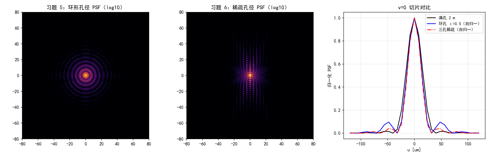
工程 3：习题 1–6（原书 5.3 节复现）#
对应文件 matlab/waveprop/ch5/ch5_problems.m（Python 版在本 notebook 工程 3 cell）：
```matlab
%% ===== 书 Schmidt PM199 第 5 章 =====
% 习题 1-6 复现（原书 5.3 节）：色差焦斑、像散/球差 + 离焦演化、
% Strehl 四算法对比、环形孔径与稀疏孔径 PSF。
% 与 python/waveprop/第5章_代码实战.ipynb 工程 3 数值行为一致。
%
% 原书习题：
% 1. BK7 的 Sellmeier 色散 -> n_F/n_d/n_C -> 平凸透镜焦距与衍射受限
% 焦斑直径；再用相干成像例（5.2.1）算 PSF 切片，加多档离焦。
% N=1024, delta=0.199 mm。
% 2. 1 波 Zernike 初级像散 + 多档离焦的 PSF 演化。
% L=4 m, D=2 m, N=512, lambda=1 um, f=16 m。
% 3. 1 波 Zernike 初级球差 + 多档离焦的 PSF 演化（参数同习题 2）。
% 4. W = 0.07 Z4 + 0.05 Z5 - 0.05 Z6 + 0.03 Z7 - 0.03 Z8（式 5.60）的
% Strehl：(a) 式 (5.26)+(5.54)/(5.55)；(b) 仿真 PSF（类比 5.2.1）。
% L=8 m, D=2 m, N=512, lambda=1 um, f=64 m。
% 5. 内外径 1 m / 2 m 环形孔径 vs 满孔径 2 m 的 PSF 与 Strehl（峰值比），
% 参数同习题 4，解析确认。
% 6. 三个直径 1 m 圆孔（中心按原书印刷 (0.6,0.6), (-0.6,0.6), (0,0.6) m，
% 三孔圆心共线于 y=0.6 且两两间距 0.6 m < 直径 1 m——疑为排印笔误，
% 按原文实现）组成的稀疏孔径 PSF，解析确认（单孔谱 x 干涉因子）。
%
% 说明：习题 2-6 的 PSF 用 |ft2(P, delta)|^2（平面波 -> 焦点，即点物的
% 相干像强度），与 5.2.1 的 ASF 同一计算。MATLAB/Python 差异：数组 1 起
% （剖面在 (N/2+1,:)）、besselj(1,.) 对应 scipy j1、zernike/zrf 与
% ch5_zernike.m 相同（本文件复制一份以便独立运行）。
clear; clc; close all;
%% 习题 1：BK7 色散、焦距与衍射受限焦斑
lam = struct('F', 0.48612, 'd', 0.58756, 'C', 0.65627); % um
ref = struct('F', 1.52238, 'd', 1.51680, 'C', 1.51432); % Schott 手册六位值
R = 51.68e-3; Dlens = 12.7e-3; % 平凸透镜（习题 1b）
fprintf('===== 习题 1：BK7 色散、焦距与衍射受限焦斑 =====\n');
keys = {'F', 'd', 'C'};
for k = 1:3
w = lam.(keys{k});
n = sellmeier_bk7(w);
f = R / (n - 1); % 薄平凸透镜 f = R/(n-1)
airy = 2.44 * (w*1e-6) * f / Dlens; % Airy 直径（第一暗环）
f_of.(keys{k}) = f; spot_of.(keys{k}) = airy;
fprintf(' n(%s) = %.6f（手册 %.5f，差 %.0e） f = %7.3f mm Airy 直径 = %5.2f um\n', ...
keys{k}, n, ref.(keys{k}), abs(n - ref.(keys{k})), f*1e3, airy*1e6);
end
Vd = (ref.d - 1) / (ref.F - ref.C);
fprintf(' 阿贝数 V_d = (n_d-1)/(n_F-n_C) = %.2f（BK7 标准 64.17）\n', Vd);
%% 习题 1c：三波长 PSF 切片 + 离焦演化（N=1024, delta=0.199mm）
N1 = 1024; d1m = 0.199e-3; L1 = N1 * d1m;
fprintf('===== 习题 1c：三波长 PSF 切片 + 离焦演化 =====\n');
psf_slices = struct();
peak0_d = [];
for k = 1:3
w = lam.(keys{k});
[x1, y1, r1, th1, delta1] = pupil_grid(L1, N1);
P = hypot(x1, y1) <= Dlens/2; % 无像差光瞳
[psf, u1] = psf_of(P, delta1, w*1e-6, f_of.(keys{k}), N1);
row = psf(N1/2+1, :);
half = max(row) / 2;
above = find(row >= half);
fwhm = (above(end) - above(1)) * (u1(2) - u1(1));
psf_slices.(keys{k}) = {row / max(row), u1, spot_of.(keys{k})};
if k == 2, peak0_d = max(psf(:)); end
fprintf(' lambda=%s: PSF 半高全宽 = %5.2f um vs Airy 直径 %5.2f um\n', ...
keys{k}, fwhm*1e6, spot_of.(keys{k})*1e6);
end
% 离焦演化（lambda_d，Zernike 离焦系数单位 RMS 波）
dfocus = [0.0, 0.125, 0.25, 0.5];
defoc_slices = cell(1, numel(dfocus));
for q = 1:numel(dfocus)
[x1, y1, r1, th1, delta1] = pupil_grid(L1, N1);
Wq = dfocus(q) * zernike(4, 2*r1/Dlens, th1);
[psf, u1] = psf_of(double(hypot(x1, y1) <= Dlens/2) ...
.* exp(1i * 2*pi * Wq), delta1, lam.d*1e-6, f_of.d, N1);
defoc_slices{q} = {psf(N1/2+1, :) / max(psf(:)), u1};
fprintf(' 离焦 %.3f 波：PSF 峰值 = 零离焦的 %.4f\n', ...
dfocus(q), max(psf(:)) / peak0_d);
end
%% 习题 2/3：像散、球差 + 离焦的 PSF 演化（L=4m, D=2m, f=16m）
L2 = 4.0; N2 = 512; D2 = 2.0; wvl2 = 1e-6; f2 = 16.0;
dfocus2 = [-2.0, -1.0, 0.0, 1.0, 2.0];
[x2, y2, r2, th2, delta2] = pupil_grid(L2, N2);
psf_dl2 = psf_of(double(hypot(x2, y2) <= D2/2), delta2, wvl2, f2, N2);
fprintf('===== 习题 2/3：像散、球差 + 离焦的 PSF 演化 =====\n');
names = {'像散 i=6', '球差 i=11'}; modes = [6, 11];
for g = 1:2
for q = 1:numel(dfocus2)
Wq = 1.0 * zernike(modes(g), 2*r2/D2, th2) ...
+ dfocus2(q) * zernike(4, 2*r2/D2, th2);
psf = psf_of(double(hypot(x2, y2) <= D2/2) .* exp(1i * 2*pi * Wq), ...
delta2, wvl2, f2, N2);
psf_grids{g}{q} = psf / max(psf(:)); %#ok<SAGROW>
fprintf(' %s + 离焦 %+.1f 波：Strehl（PSF 峰值比）= %.4f\n', ...
names{g}, dfocus2(q), max(psf(:)) / max(psf_dl2(:)));
end
end
%% 习题 4：五阶混合像差的 Strehl（L=8m, D=2m, f=64m）
L4 = 8.0; N4 = 512; D4 = 2.0; wvl4 = 1e-6; f4 = 64.0;
[x4, y4, r4, th4, delta4] = pupil_grid(L4, N4);
coef = [4, 0.07; 5, 0.05; 6, -0.05; 7, 0.03; 8, -0.03]; % 式 (5.60)
W4 = zeros(N4);
for q = 1:size(coef, 1)
W4 = W4 + coef(q, 2) * zernike(coef(q, 1), 2*r4/D4, th4);
end
sig2 = sum(coef(:, 2).^2); % 式 (5.26)
sig2_phi = (2*pi)^2 * sig2;
ap4 = hypot(x4, y4) <= D4/2;
P_ab = ap4 .* exp(1i * 2*pi * W4);
P_dl = double(ap4);
S_pupil = abs(sum(P_ab, 'all'))^2 / abs(sum(P_dl, 'all'))^2; % 式 (5.46)
[psf_dl4, u4] = psf_of(P_dl, delta4, wvl4, f4, N4);
psf_ab4 = psf_of(P_ab, delta4, wvl4, f4, N4);
S_sim = max(psf_ab4(:)) / max(psf_dl4(:));
fprintf('===== 习题 4：五阶混合像差的 Strehl =====\n');
fprintf(' sigma^2 = sum a_i^2 = %.4f 波^2 -> sigma_phi^2 = %.4f rad^2\n', sig2, sig2_phi);
fprintf(' (a) 式 (5.26)+(5.54)：S = 1 - sigma_phi^2 = %.4f\n', 1 - sig2_phi);
fprintf(' 式 (5.55) 经验：S = exp(-sigma_phi^2) = %.4f\n', exp(-sig2_phi));
fprintf(' (b) 光瞳积分（式 5.46）：S = %.4f；仿真 PSF 峰值比：S = %.4f\n', ...
S_pupil, S_sim);
%% 习题 5：环形孔径（内外径 1m/2m，eps=0.5）vs 满孔径
ap_ann = double(hypot(x4, y4) <= D4/2) - double(hypot(x4, y4) <= D4/4);
psf_ann = psf_of(ap_ann, delta4, wvl4, f4, N4);
S_ann = max(psf_ann(:)) / max(psf_dl4(:));
S_analytic = (1 - 0.5^2)^2; % 轴上场 ∝ 面积：(1-eps^2)^2
c = N4/2 + 1;
row_ann = psf_ann(c, :); row_dl = psf_dl4(c, :);
idx0 = c + find(row_ann(c:end) < row_ann(c)*1e-6, 1) - 1;
idx0_dl = c + find(row_dl(c:end) < row_dl(c)*1e-6, 1) - 1;
fprintf('===== 习题 5：环形孔径 =====\n');
fprintf(' 峰值比 Strehl = %.4f vs 解析 (1-eps^2)^2 = %.4f（相对差 %.1e）\n', ...
S_ann, S_analytic, abs(S_ann - S_analytic)/S_analytic);
fprintf(' 第一暗环半径：环孔 %.2f um vs 满孔 %.2f um（环孔主瓣更窄）\n', ...
u4(idx0)*1e6, u4(idx0_dl)*1e6);
%% 习题 6：稀疏孔径（三个 1m 圆孔，中心按原书印刷）
centers = [0.6, 0.6; -0.6, 0.6; 0.0, 0.6]; % 原书印刷：三孔共线 y=0.6
fprintf('===== 习题 6：稀疏孔径 =====\n');
% 三孔两两间距 0.6 m < 直径 1 m：按"求和"孔径做解析对照（FT 线性），
% 按"并集"孔径（物理透过率）算峰值比；两者在重叠区相差二阶小量
ap_sum = zeros(N4); ap_sp = zeros(N4);
for q = 1:3
dsk = double(hypot(x4 - centers(q,1), y4 - centers(q,2)) <= 0.5);
ap_sum = ap_sum + dsk;
ap_sp = max(ap_sp, dsk);
end
psf_sp = psf_of(ap_sp, delta4, wvl4, f4, N4);
psf_sum = psf_of(ap_sum, delta4, wvl4, f4, N4);
% 解析：U(f) = FT{半径 0.5 圆盘}(f) * sum_j exp(-i 2pi f.c_j)
fxn = (-N4/2 : N4/2-1) / (N4 * delta4);
[FXn, FYn] = meshgrid(fxn, fxn);
rho = hypot(FXn, FYn);
U1 = 0.5 * besselj(1, 2*pi*0.5*rho) ./ max(rho, eps);
U1(rho == 0) = pi * 0.25; % jinc(0, R=0.5) = 面积
inter = zeros(N4);
for q = 1:3
inter = inter + exp(-1i * 2*pi * (FXn*centers(q,1) + FYn*centers(q,2)));
end
psf_an = abs(U1 .* inter).^2;
% 数值 PSF 带 delta^4 定标；对照用归一化形状（各自除以轴上峰值）
samples = [c c; c c+1; c+2 c+3; c+5 c+2; c+9 c];
err = 0;
for q = 1:size(samples, 1)
ii = samples(q, 1); jj = samples(q, 2);
err = max(err, abs(psf_sum(ii, jj)/psf_sum(c, c) - psf_an(ii, jj)/psf_an(c, c)));
end
area_ratio = sum(ap_sp(:)) * delta4^2 / (pi * 1.0^2);
S_sp = max(psf_sp(:)) / max(psf_dl4(:));
fprintf(' PSF（求和孔径）vs 解析（单孔谱 x 干涉因子）归一化形状最大差 = %.2e\n', err);
fprintf(' 三孔/满孔面积比 = %.4f；峰值比 = %.4f（= 面积比平方 %.4f）\n', ...
area_ratio, S_sp, area_ratio^2);
%% 绘图（对应 notebook 图 5-10/11/12）
figure('Position', [40 40 1400 680]);
sgtitle('习题 1：BK7 三波长焦斑（上排，红线 = ±Airy 半径）与 d 光离焦演化（下排）');
for k = 1:3
subplot(2, 4, k);
dat = psf_slices.(keys{k});
row = dat{1}; u1 = dat{2}; airy = dat{3};
m = abs(u1) < 5*airy;
plot(u1(m)*1e6, row(m), 'k-', 'LineWidth', 1.2); hold on;
xline(airy*1e6, 'r:'); xline(-airy*1e6, 'r:');
title(sprintf('lambda=%s um：Airy 直径 %.1f um', keys{k}, airy*1e6), 'FontSize', 10);
xlabel('u [um]'); grid on;
if k == 1, ylabel('归一化辐照度'); end
end
subplot(2, 4, 4); axis off; % 上排第 4 格留白
for q = 1:numel(dfocus)
subplot(2, 4, 4 + q);
dat = defoc_slices{q};
m = abs(dat{2}) < 8*spot_of.d;
plot(dat{2}(m)*1e6, dat{1}(m), 'b-', 'LineWidth', 1.2);
title(sprintf('离焦 %.1f 波（λ=d）', dfocus(q)), 'FontSize', 10);
xlabel('u [um]'); grid on;
end
figure('Position', [40 60 1600 860]);
for g = 1:2
for q = 1:numel(dfocus2)
subplot(2, 5, (g-1)*5 + q);
imagesc(log10(psf_grids{g}{q} + 1e-6));
caxis([-5 0]); colormap inferno;
xlim([-40 40]); ylim([-40 40]);
title(sprintf('%s, 离焦 %+.1f 波', names{g}, dfocus2(q)), 'FontSize', 10);
xlabel('u [um]');
if q == 1, ylabel('v [um]'); end
end
end
sgtitle('习题 2/3：1 波像散/球差加离焦的焦斑演化（PSF，log10 显示）');
figure('Position', [40 80 1500 480]);
subplot(1, 3, 1);
imagesc(log10(psf_ann / max(psf_ann(:)) + 1e-9)); caxis([-5 0]); colormap inferno;
xlim([-80 80]); ylim([-80 80]); colorbar;
title('习题 5：环形孔径 PSF（log10）');
subplot(1, 3, 2);
imagesc(log10(psf_sp / max(psf_sp(:)) + 1e-9)); caxis([-5 0]); colormap inferno;
xlim([-80 80]); ylim([-80 80]); colorbar;
title('习题 6：稀疏孔径 PSF（log10）');
subplot(1, 3, 3);
mm = abs(u4) <= 120e-6;
plot(u4(mm)*1e6, row_dl(mm)/max(row_dl), 'k-', 'LineWidth', 1.3); hold on;
plot(u4(mm)*1e6, row_ann(mm)/max(row_ann), 'b-', 'LineWidth', 1.1);
plot(u4(mm)*1e6, psf_sp(c, mm)/max(psf_sp(:)), 'r-.', 'LineWidth', 1.1);
xlabel('u [um]'); ylabel('归一化 PSF'); grid on;
title('v=0 切片对比');
legend({'满孔 2 m', '环孔 ε=0.5（自归一）', '三孔稀疏（自归一）'}, 'FontSize', 8);
%% ===== 本地函数 =====
function n = sellmeier_bk7(wvl_um)
% BK7 的 Sellmeier 色散（式 5.56，Schott 手册系数，lambda 以 um 计）
B = [1.03961212, 0.231792344, 1.01046945];
C = [0.00600069867, 0.0200179144, 103.560653];
n2 = 1.0;
for q = 1:3
n2 = n2 + B(q) * wvl_um^2 / (wvl_um^2 - C(q));
end
n = sqrt(n2);
end
function [x, y, r, theta, delta] = pupil_grid(L, N)
% 居中网格与极坐标
delta = L / N;
[x, y] = meshgrid((-N/2 : N/2-1) * delta);
r = hypot(x, y);
theta = atan2(y, x);
end
function [psf, u1d] = psf_of(P, delta, wvl, f, N)
% PSF = |ft2(P)|^2 与像面坐标（间隔 lambda f/(N delta)）
h = ft2(P, delta);
psf = abs(h).^2;
u1d = (-N/2 : N/2-1) * wvl * f / (N * delta);
end
function G = ft2(g, delta)
% 原书 Listing 2.5：定标正确的二维 DFT（乘 delta^2）
G = fftshift(fft2(fftshift(g))) * delta^2;
end
function Z = zernike(i, r, theta)
% Noll 单指标 Zernike（m=0 分支已按勘误补 sqrt(n+1)）；与 ch5_zernike.m 相同
[n, m] = zidx(i);
R = zrf(n, m, r);
if m == 0
Z = sqrt(n+1) * R;
elseif mod(i, 2) == 0
Z = sqrt(2*(n+1)) * R .* cos(m*theta);
else
Z = sqrt(2*(n+1)) * R .* sin(m*theta);
end
end
function R = zrf(n, m, r)
% Zernike 径向多项式（式 5.5a，阶乘用 gamma 实现）
R = zeros(size(r));
for s = 0:(n-m)/2
num = (-1)^s * gamma(n - s + 1);
den = gamma(s+1) * gamma((n+m)/2 - s + 1) * gamma((n-m)/2 - s + 1);
R = R + num / den * r.^(n - 2*s);
end
end
function [n, m] = zidx(i)
% 表 5.2 的 (i,n,m) 映射（Noll 单指标）；与 ch5_zernike.m 相同
persistent rows
if isempty(rows)
rows = zeros(0, 2);
for n0 = 0:40
for m0 = mod(n0, 2):2:n0
rows(end+1, :) = [n0, m0]; %#ok<AGROW>
if m0 > 0
rows(end+1, :) = [n0, m0]; %#ok<AGROW>
end
end
end
end
n = rows(i, 1);
m = rows(i, 2);
end
```python
# -*- coding: utf-8 -*-
"""
===== 书 Schmidt PM199 第 5 章习题 1-6 复现（原书 5.3 节）：色差焦斑、像散/球差 + 离焦演化、
Strehl 四算法对比、环形孔径与稀疏孔径 PSF。
原书习题：
1. BK7 的 Sellmeier 色散 -> n_F/n_d/n_C -> 平凸透镜焦距与衍射受限
焦斑直径；再用相干成像例（5.2.1）算 PSF 切片，加多档离焦。
N=1024, delta=0.199 mm。
2. 1 波 Zernike 初级像散 + 多档离焦的 PSF 演化。
L=4 m, D=2 m, N=512, lambda=1 um, f=16 m。
3. 1 波 Zernike 初级球差 + 多档离焦的 PSF 演化（参数同习题 2）。
4. W = 0.07 Z4 + 0.05 Z5 - 0.05 Z6 + 0.03 Z7 - 0.03 Z8 的 Strehl：
(a) 式 (5.26)+(5.54)/(5.55)；(b) 仿真 PSF（类比 5.2.1）。
L=8 m, D=2 m, N=512, lambda=1 um, f=64 m。
5. 内外径 1 m / 2 m 环形孔径 vs 满孔径 2 m 的 PSF 与 Strehl
（峰值比），参数同习题 4，解析确认。
6. 三个直径 1 m 圆孔（中心按原书印刷 (0.6,0.6), (-0.6,0.6), (0,0.6) m，
三孔圆心共线于 y=0.6——疑为排印笔误，按原文实现）组成的稀疏孔径
PSF，解析确认（单孔谱 x 干涉因子）。
数值验证（运行本脚本全部自动打印）：
(1) BK7 三个标准波长的折射率（对照 Schott 手册值 n_d=1.51680,
n_F=1.52238, n_C=1.51432）、焦距 f=R/(n-1)、Airy 直径
2.44*lambda*f/D；三个波长的零离焦 PSF 半高全宽对照 Airy 直径；
离焦 0/0.5/1/2 波的峰值跌落；
(2/3) 像散/球差加离焦的 PSF 图（图 5-11）；
(4) Strehl 四算法：式 (5.26)+(5.54)、式 (5.55)、光瞳积分（式 5.46）、
仿真 PSF 峰值比；
(5) 环孔 Strehl（峰值比）vs 解析 (1-eps^2)^2（轴上场 ∝ 面积）；
(6) 稀疏孔径 PSF vs 解析 |FT{circ}|^2 * |sum exp(-i2pi f.c_j)|^2
逐点对照 + 峰值比 vs 面积比的平方。
说明：P2-P6 的 PSF 用 |ft2(P, delta)|^2（平面波 -> 焦点，即点物的相干像的
强度），与 5.2.1 的 ASF 同一计算。
用法：python ch5_problems.py <输出目录> 保存 PNG；否则弹窗显示。
依赖：numpy + matplotlib + scipy；base.py（circle/ft2_centered）；
ch5_zernike.py（同目录，zernike）。
"""
import os
import sys
import numpy as np
import matplotlib.pyplot as plt
from scipy.special import j1
plt.rcParams['font.sans-serif'] = ['SimHei', 'Microsoft YaHei', 'Arial Unicode MS']
plt.rcParams['axes.unicode_minus'] = False
sys.path.insert(0, os.path.join(os.path.dirname(os.path.abspath(__file__)),
"..", "..", "fourier", "common"))
from base import circle, ft2_centered # noqa: E402
# zernike 在本 notebook 第一个代码 cell（工程 1）中定义，按顺序运行即可；
# 拆回独立 .py 文件时改用：from ch5_zernike import zernike
def sellmeier_bk7(wvl_um):
"""BK7 的 Sellmeier 色散（式 5.56，Schott 手册系数，lambda 以 um 计）。"""
B = [1.03961212, 0.231792344, 1.01046945]
C = [0.00600069867, 0.0200179144, 103.560653]
n2 = 1.0
for Bi, Ci in zip(B, C):
n2 += Bi * wvl_um ** 2 / (wvl_um ** 2 - Ci)
return np.sqrt(n2)
def pupil_grid(L, N):
"""居中网格与极坐标。"""
delta = L / N
x, y = np.meshgrid((np.arange(N) - N // 2) * delta,
(np.arange(N) - N // 2) * delta)
return x, y, np.hypot(x, y), np.arctan2(y, x), delta
def psf_of(P, delta, wvl, f, N):
"""PSF = |ft2(P)|^2 与像面坐标（间隔 lambda f/(N delta)）。"""
h = ft2_centered(P, delta)
psf = np.abs(h) ** 2
u1d = (np.arange(N) - N // 2) * wvl * f / (N * delta)
return psf, u1d
def main(outdir=None):
print('===== 习题 1：BK7 色散、焦距与衍射受限焦斑 =====')
lam = {'F': 0.48612, 'd': 0.58756, 'C': 0.65627} # um
ref = {'F': 1.52238, 'd': 1.51680, 'C': 1.51432} # Schott 手册六位值
R, Dlens = 51.68e-3, 12.7e-3 # 平凸透镜（习题 1b）
f_of, spot_of = {}, {}
for k, w in lam.items():
n = sellmeier_bk7(w)
f = R / (n - 1.0) # 薄平凸透镜 f = R/(n-1)
airy = 2.44 * (w * 1e-6) * f / Dlens # Airy 直径（第一暗环）
f_of[k], spot_of[k] = f, airy
print(' n(%s) = %.6f（手册 %.5f，差 %.0e） f = %7.3f mm '
'Airy 直径 = %5.2f um' % (k, n, ref[k], abs(n - ref[k]),
f * 1e3, airy * 1e6))
Vd = (ref['d'] - 1) / (ref['F'] - ref['C'])
print(' 阿贝数 V_d = (n_d-1)/(n_F-n_C) = %.2f（BK7 标准 64.17）' % Vd)
print('===== 习题 1c：三波长 PSF 切片 + 离焦演化（N=1024, delta=0.199mm） =====')
N1 = 1024
L1 = N1 * 0.199e-3
psf_slices, peak0_d = {}, None
for k, w in lam.items():
x1, y1, r1, th1, delta1 = pupil_grid(L1, N1)
P = circle(x1, y1, Dlens / 2) # 无像差光瞳
psf, u1 = psf_of(P, delta1, w * 1e-6, f_of[k], N1)
row = psf[N1 // 2, :]
half = row.max() / 2
above = np.where(row >= half)[0]
fwhm = (above[-1] - above[0]) * (u1[1] - u1[0])
psf_slices[k] = (row / row.max(), u1, spot_of[k])
if k == 'd':
peak0_d = psf.max()
print(' lambda=%s: PSF 半高全宽 = %5.2f um vs Airy 直径 %5.2f um'
% (k, fwhm * 1e6, spot_of[k] * 1e6))
# 离焦演化（lambda_d，0/0.5/1/2 波 Z4）
dfocus = [0.0, 0.125, 0.25, 0.5] # Zernike 离焦系数（单位 RMS 波）
defoc_slices = []
for a in dfocus:
x1, y1, r1, th1, delta1 = pupil_grid(L1, N1)
W = a * zernike(4, 2 * r1 / Dlens, th1)
psf, u1 = psf_of(circle(x1, y1, Dlens / 2)
* np.exp(1j * 2 * np.pi * W), delta1,
lam['d'] * 1e-6, f_of['d'], N1)
defoc_slices.append((psf[N1 // 2, :] / psf.max(), u1))
print(' 离焦 %.3f 波：PSF 峰值 = 零离焦的 %.4f'
% (a, psf.max() / peak0_d))
print('===== 习题 2/3：像散、球差 + 离焦的 PSF 演化（L=4m, D=2m, f=16m） =====')
L2, N2, D2, wvl2, f2 = 4.0, 512, 2.0, 1e-6, 16.0
dfocus2 = [-2.0, -1.0, 0.0, 1.0, 2.0] # 像散线焦在 -0.71/+0.71
x2, y2, r2, th2, delta2 = pupil_grid(L2, N2)
psf_dl2 = psf_of(circle(x2, y2, D2 / 2), delta2, wvl2, f2, N2)[0]
psf_grids = {}
for name, mi in [('像散 i=6', 6), ('球差 i=11', 11)]:
rows = []
for a in dfocus2:
W = 1.0 * zernike(mi, 2 * r2 / D2, th2) \
+ a * zernike(4, 2 * r2 / D2, th2)
psf, u2 = psf_of(circle(x2, y2, D2 / 2)
* np.exp(1j * 2 * np.pi * W), delta2, wvl2, f2, N2)
rows.append(psf / psf.max())
print(' %s + 离焦 %+.1f 波：Strehl（PSF 峰值比）= %.4f'
% (name, a, psf.max() / psf_dl2.max()))
psf_grids[name] = rows
print('===== 习题 4：五阶混合像差的 Strehl（L=8m, D=2m, f=64m） =====')
L4, N4, D4, wvl4, f4 = 8.0, 512, 2.0, 1e-6, 64.0
x4, y4, r4, th4, delta4 = pupil_grid(L4, N4)
coef = {4: 0.07, 5: 0.05, 6: -0.05, 7: 0.03, 8: -0.03} # 式 (5.60)
W4 = np.zeros((N4, N4))
for i, a in coef.items():
W4 = W4 + a * zernike(i, 2 * r4 / D4, th4)
sig2 = sum(a ** 2 for a in coef.values()) # 式 (5.26)
sig2_phi = (2 * np.pi) ** 2 * sig2
P_ab = circle(x4, y4, D4 / 2) * np.exp(1j * 2 * np.pi * W4)
P_dl = circle(x4, y4, D4 / 2)
S_pupil = np.abs(np.sum(P_ab)) ** 2 / np.abs(np.sum(P_dl)) ** 2 # 式 (5.46)
psf_dl4, u4 = psf_of(P_dl, delta4, wvl4, f4, N4)
psf_ab4, _ = psf_of(P_ab, delta4, wvl4, f4, N4)
S_sim = psf_ab4.max() / psf_dl4.max()
print(' sigma^2 = sum a_i^2 = %.4f 波^2 -> sigma_phi^2 = %.4f rad^2'
% (sig2, sig2_phi))
print(' (a) 式 (5.26)+(5.54)：S = 1 - sigma_phi^2 = %.4f' % (1 - sig2_phi))
print(' 式 (5.55) 经验：S = exp(-sigma_phi^2) = %.4f' % np.exp(-sig2_phi))
print(' (b) 光瞳积分（式 5.46）：S = %.4f；仿真 PSF 峰值比：S = %.4f'
% (S_pupil, S_sim))
print('===== 习题 5：环形孔径（内外径 1m/2m，eps=0.5）vs 满孔径 =====')
ap_ann = circle(x4, y4, D4 / 2) - circle(x4, y4, D4 / 4)
psf_ann, _ = psf_of(ap_ann, delta4, wvl4, f4, N4)
S_ann = psf_ann.max() / psf_dl4.max()
S_analytic = (1 - 0.5 ** 2) ** 2 # 轴上场 ∝ 面积：(1-eps^2)^2
c = N4 // 2
row_ann = psf_ann[c, :]
row_dl = psf_dl4[c, :]
idx0 = c + np.argmax(row_ann[c:] < row_ann[c] * 1e-6)
idx0_dl = c + np.argmax(row_dl[c:] < row_dl[c] * 1e-6)
print(' 峰值比 Strehl = %.4f vs 解析 (1-eps^2)^2 = %.4f（相对差 %.1e）'
% (S_ann, S_analytic, abs(S_ann - S_analytic) / S_analytic))
print(' 第一暗环半径：环孔 %.2f um vs 满孔 %.2f um（环孔主瓣更窄）'
% (u4[idx0] * 1e6, u4[idx0_dl] * 1e6))
print('===== 习题 6：稀疏孔径（三个 1m 圆孔，中心按原书印刷） =====')
centers = [(0.6, 0.6), (-0.6, 0.6), (0.0, 0.6)] # 原书印刷：三孔共线 y=0.6
# 三孔两两间距 0.6 m < 直径 1 m：按"求和"孔径做解析对照（FT 线性），
# 按"并集"孔径（物理透过率）算峰值比；两者在重叠区相差二阶小量
ap_sum = np.zeros((N4, N4))
ap_sp = np.zeros((N4, N4))
for cx, cy in centers:
dsk = circle(x4 - cx, y4 - cy, 0.5)
ap_sum = ap_sum + dsk
ap_sp = np.maximum(ap_sp, dsk)
psf_sp, _ = psf_of(ap_sp, delta4, wvl4, f4, N4)
psf_sum, _ = psf_of(ap_sum, delta4, wvl4, f4, N4)
# 解析：U(f) = FT{半径 0.5 圆盘}(f) * sum_j exp(-i 2pi f.c_j)
fxn = (np.arange(N4) - N4 // 2) / (N4 * delta4)
FXn, FYn = np.meshgrid(fxn, fxn)
rho = np.hypot(FXn, FYn)
with np.errstate(divide='ignore', invalid='ignore'):
U1 = np.where(rho > 0, 0.5 * j1(2 * np.pi * 0.5 * rho) / rho,
np.pi * 0.25) # base.jinc(rho, R=0.5)
inter = np.zeros((N4, N4), dtype=complex)
for cx, cy in centers:
inter = inter + np.exp(-1j * 2 * np.pi * (FXn * cx + FYn * cy))
psf_an = np.abs(U1 * inter) ** 2
# 数值 PSF 带 delta^4 定标；对照用归一化形状（各自除以轴上峰值）
samples = [(c, c), (c, c + 1), (c + 2, c + 3), (c + 5, c + 2), (c + 9, c)]
err = max(abs(psf_sum[i, j] / psf_sum[c, c]
- psf_an[i, j] / psf_an[c, c]) for i, j in samples)
area_ratio = ap_sp.sum() * delta4 ** 2 / (np.pi * 1.0 ** 2)
S_sp = psf_sp.max() / psf_dl4.max()
print(' PSF（求和孔径）vs 解析（单孔谱 x 干涉因子）归一化形状最大差 = %.2e' % err)
print(' 三孔/满孔面积比 = %.4f；峰值比 = %.4f（= 面积比平方 %.4f）'
% (area_ratio, S_sp, area_ratio ** 2))
if not outdir:
plt.show()
return
# ---- 图 5-10：习题 1（三波长焦斑 + 离焦演化） ----
fig, axs = plt.subplots(2, 4, figsize=(14, 6.8))
for ax, k in zip(axs[0], ['F', 'd', 'C']):
row, u1, airy = psf_slices[k]
m = np.abs(u1) < 5 * airy
ax.plot(u1[m] * 1e6, row[m], 'k-', linewidth=1.2)
ax.axvline(airy * 1e6, color='r', linestyle=':', linewidth=1)
ax.axvline(-airy * 1e6, color='r', linestyle=':', linewidth=1)
ax.set_title('lambda=%s um：Airy 直径 %.1f um' % (k, airy * 1e6), fontsize=10)
ax.set_xlabel('u [um]'); ax.grid(alpha=0.3)
axs[0, 3].axis('off')
axs[0, 0].set_ylabel('归一化辐照度')
for ax, a, dat in zip(axs[1], dfocus, defoc_slices):
row, u1 = dat
airy_d = spot_of['d']
m = np.abs(u1) < 8 * airy_d
ax.plot(u1[m] * 1e6, row[m], 'b-', linewidth=1.2)
ax.set_title('离焦 %.1f 波（λ=d）' % a, fontsize=10)
ax.set_xlabel('u [um]'); ax.grid(alpha=0.3)
axs[1, 0].set_ylabel('归一化辐照度')
fig.suptitle('习题 1：BK7 三波长焦斑（上排，红线 = ±Airy 半径）'
'与 d 光离焦演化（下排）', fontsize=12)
fig.tight_layout(rect=[0, 0, 1, 0.95])
fig.savefig(os.path.join(outdir, 'fig-5-10.png'), dpi=150)
print(' 已保存 fig-5-10.png')
# ---- 图 5-11：习题 2/3 PSF 演化（2x4 图，±40 um 窗） ----
ext = u2[-1] * 1e6
fig, axs = plt.subplots(2, 5, figsize=(16, 8.6))
for rowi, name in enumerate(['像散 i=6', '球差 i=11']):
for coli, (a, img) in enumerate(zip(dfocus2, psf_grids[name])):
ax = axs[rowi, coli]
ax.imshow(np.log10(img + 1e-6), cmap='inferno', origin='lower',
extent=[-ext, ext, -ext, ext], vmin=-5, vmax=0)
ax.set_title('%s, 离焦 %+.1f 波' % (name, a), fontsize=10, pad=4)
ax.set_xlim(-40, 40); ax.set_ylim(-40, 40)
if coli == 0:
ax.set_ylabel('v [um]')
ax.set_xlabel('u [um]')
fig.suptitle('习题 2/3：1 波像散/球差加离焦的焦斑演化（PSF，log10 显示）', fontsize=12)
fig.tight_layout(rect=[0, 0, 1, 0.95])
fig.savefig(os.path.join(outdir, 'fig-5-11.png'), dpi=150)
print(' 已保存 fig-5-11.png')
# ---- 图 5-12：习题 5/6（环孔与稀疏孔径） ----
fig, axs = plt.subplots(1, 3, figsize=(15, 4.8))
axs[0].imshow(np.log10(psf_ann / psf_ann.max() + 1e-9), cmap='inferno',
origin='lower', extent=[-80, 80, -80, 80], vmin=-5)
axs[0].set_title('习题 5：环形孔径 PSF（log10）')
axs[1].imshow(np.log10(psf_sp / psf_sp.max() + 1e-9), cmap='inferno',
origin='lower', extent=[-80, 80, -80, 80], vmin=-5)
axs[1].set_title('习题 6：稀疏孔径 PSF（log10）')
mm = np.abs(u4) < 120e-6
axs[2].plot(u4[mm] * 1e6, (row_dl / row_dl.max())[mm], 'k-',
label='满孔 2 m')
axs[2].plot(u4[mm] * 1e6, (row_ann / row_ann.max())[mm], 'b-',
label='环孔 ε=0.5（自归一）')
axs[2].plot(u4[mm] * 1e6, (psf_sp[c, :] / psf_sp.max())[mm], 'r-.',
label='三孔稀疏（自归一）')
axs[2].set_xlabel('u [um]'); axs[2].set_ylabel('归一化 PSF')
axs[2].set_title('v=0 切片对比'); axs[2].grid(alpha=0.3)
axs[2].legend(fontsize=9)
fig.tight_layout()
fig.savefig(os.path.join(outdir, 'fig-5-12.png'), dpi=150)
print(' 已保存 fig-5-12.png')
if __name__ == '__main__':
main(sys.argv[1] if len(sys.argv) > 1 else None)
工程 3 实跑输出（Python）： 习题 1 折射率 \(n_F/n_d/n_C = 1.522377/1.516800/1.514322\)（手册差 \(\le3\times10^{-6}\)），\(f = 98.932/100.000/100.482\ \mathrm{mm}\)，Airy 直径 \(9.24/11.29/12.67\ \mu\mathrm m\)，\(V_d = 64.12\)；PSF 半高全宽 \(3.78/4.61/5.18\ \mu\mathrm m\)；离焦 0/0.125/0.25/0.5 波峰值比 \(1.0000/0.5172/0.0704/0.0189\)。习题 ⅔ 的 Strehl 表见正文。习题 4：\(\sigma^2 = 0.0117\)、\(\sigma_\phi^2 = 0.4619\)，四算法 \(0.5381/0.6301/0.6300/0.6300\)。习题 5：\(S = 0.5633\) vs 解析 0.5625（\(1.5\times10^{-3}\)），第一暗环 112 vs 136 μm。习题 6：形状最大差 \(5.0\times10^{-4}\)，面积比 0.6082，峰值比 0.3710 vs 0.3699。
坑与陷阱#
1. m=0 的 Zernike 归一化因子 \(\sqrt{n+1}\) 丢了
原书 (5.4) 印刷漏了它（勘误），自己写 zernike 函数时别跟着丢。自检：\(Z_4(0,0) = -\sqrt{3}\)、\(Z_{11}(1,0) = \sqrt{5}\)（查表 5.2），对不上就是归一化错了。
2. 径向正交积分是 \(1/[2(n+1)]\)，不是书印的 \(1/(2n+1)\)
式 (5.7) 的笔误。用 \(n=0\) 反例记：\(\int_0^1 r\,dr = 1/2\)，只有 \(1/[2(0+1)]\) 对。(5.22)–(5.26) 的方差推导依赖 (5.9)，归一化错了 (5.26) 就不是"系数平方和"了。
3. 正交性只在单位圆内成立——求和前先掩膜
Gram 矩阵、系数投影、\(\sigma^2\) 全部只对孔径内样本求和。Zernike 多项式在圆外不为零，忘了 idxAp 掩膜，"正交"会错得离谱（工程 1 验证 2 特意强调这一点）。
4. \(W\) 用波、\(\phi\) 用弧度，\(2\pi\) 别忘
\(\mathcal{P} = P\,e^{i2\pi W}\)（式 5.1）；Listing 5.3 里 screen / (2*pi) 是 rad→波的换算。最常见错误是忘了 \(2\pi\)：0.05 波的像差按 0.05 rad 算，Strehl 会"好"到假。换算关系 \(\sigma_\phi^2 = 4\pi^2\sigma^2\) 同理。
5. ATF 与 OTF 是两种不同的 \(H\)，归一化不同
相干 ATF = \(\lambda z_i\,\mathcal{P}(-\lambda z_i f)\)：复值、可为负、不归一（\(H(0)=\lambda z_i\)，量纲 m²）；OTF = 光瞳自相关归一到 1（\(H(0)=1\)）。两节共用符号 \(H\)，读公式先确认在 5.2.1 还是 5.2.2。
6. 式 (5.34) 的 \(\lambda z_i\) 因子是对的，别当勘误删掉
推导里二维雅可比 \((\lambda z_i)^2\) 抵掉 \(1/(\lambda z_i)\) 后剩一个 \(\lambda z_i\)。工程 2 实测 \(\max|\mathcal{F}\{h\} - \lambda z_i\,\mathcal{P}(-\lambda z_i f)|\sim10^{-22}\)。删了它，ATF 的直流值与绝对定标全错。
7. \(|h|^2\) 的 DFT 是循环自相关——位移大了一定回绕
用 \(|h|^2\) 的 FT 数值算 OTF（路线 A）时，光瞳自相关在位移超过 \(L - D\)（网格宽减光瞳直径）后卷回窗内。要么垫零做线性自相关（路线 B），要么只在 \(|f|\le(L-D)/\lambda z_i\) 内相信路线 A——工程 2 实测回绕区误差 0.35，完全不能用。
8. Maréchal / 经验式只在小像差下成立
\(\sigma_\phi^2\lesssim1\)（RMS \(\lesssim 0.16\) 波）内 \(1-\sigma_\phi^2\) 与 \(e^{-\sigma_\phi^2}\) 都跟仿真贴；1 波像差时 \(\sigma_\phi^2\approx39.5\)，Maréchal 给负数、经验式给 \(10^{-17}\)，真实 Strehl 只能仿真（习题 ⅔ 实测 \(0.007\sim0.047\)）。
速览#
- 成像系统 = 对场（相干）或辐照度（非相干）的线性系统；像差 \(W\)（单位：波）只属于系统，进模型靠广义光瞳 \(\mathcal{P} = P\,e^{i2\pi W}\)（式 5.1）。
- Seidel 多项式直观但不正交；Zernike 圆多项式在单位圆上完备正交（式 5.7–5.9，\(\int\!\int Z_i^2 = \pi\)），Noll 单指标、sin/cos 由 \(i\) 奇偶定（表 5.2）。
- 求 Zernike 系数 = 最小二乘：\(W = ZA\)，MATLAB
A = Z\W（式 5.17/5.18）；网格离散下重构 (5.15) 只是近似，格点越密越准。 - 波前方差 = 系数平方和：\(\sigma^2 = \sum_{i\ge2} a_i^2\)（式 5.26）——单位 RMS 归一化的直接红利。
- 相干成像：\(U_i = h\otimes U_o\)，\(h = \mathcal{F}\{\mathcal{P}\}/(\lambda z_i)\)（式 5.29）；ATF \(= \lambda z_i\,\mathcal{P}(-\lambda z_i f)\)（式 5.34）；圆孔截频 \(f_0 = D/(2\lambda z_i)\)。
- 非相干成像：\(I_i = |h|^2\otimes I_o\)（式 5.35）；OTF = 光瞳自相关归一（式 5.41），圆孔闭式 (5.42)，截频 \(2f_0\)、\(H\ge0\)。
- Strehl 比：精确式 (5.45)/(5.46)（光瞳积分，也是 PSF 峰值比）；小像差用 Maréchal \(1-\sigma_\phi^2\)（5.54）或经验式 \(e^{-\sigma_\phi^2}\)（5.55，拟合最好）。
- 环孔 Strehl \(= (1-\epsilon^2)^2\)（轴上场 ∝ 面积）；稀疏孔径峰值 \(\propto\) 面积比平方。
- 离焦极"贵"：0.125 波 RMS 离焦就把 PSF 峰值打到 0.52（习题 1 实测）。
- 原书笔误三处：(5.4) m=0 缺 \(\sqrt{n+1}\)、(5.7) \(1/(2n+1)\) 应为 \(1/[2(n+1)]\)、表 5.2 标题 36 实列 37；习题 6 三孔坐标疑似排印错误。
术语速查#
| 英文 | 中文 | 一句话 |
|---|---|---|
| aberration | 像差 | 波前对理想球面相位的偏离，\(W\) 以波计 |
| generalized pupil function | 广义光瞳函数 | \(\mathcal{P} = P\,e^{i2\pi W}\)，振幅光瞳 × 像差相位 |
| Seidel aberrations | Seidel（初级）像差 | tilt/defocus/像散/彗差/球差的幂多项式表示 |
| Zernike circle polynomials | Zernike 圆多项式 | 单位圆上完备正交的像差基底（Noll 约定） |
| mode-limited wavefront | 模式受限波前 | 只保留前 \(n_Z\) 个模式的近似 \(W'\) |
| adaptive optics | 自适应光学 | 波前传感 + 变形镜实时补偿像差的闭环系统 |
| RMS wavefront error | RMS 波前差 | \(\sigma = \sqrt{\sum_{i\ge2}a_i^2}\)，像差大小的单一度量 |
| amplitude spread function (ASF) | 振幅扩散函数 | 相干成像的脉冲响应 \(h = \mathcal{F}\{\mathcal{P}\}/(\lambda z_i)\) |
| amplitude transfer function (ATF) | 振幅传递函数 | \(H = \lambda z_i\,\mathcal{P}(-\lambda z_i f)\)，缩放翻转的光瞳 |
| point spread function (PSF) | 点扩散函数 | 非相干成像的脉冲响应 ( |
| optical transfer function (OTF) | 光学传递函数 | PSF 谱的归一化 = 光瞳自相关（式 5.41） |
| modulation transfer function (MTF) | 调制传递函数 | OTF 的模，\(H\ge0\) 时与 OTF 相同 |
| Strehl ratio | Strehl 比 | 像差系统与无像差系统轴上 PSF 峰值之比 |
| Maréchal formula | Maréchal 公式 | 小像差近似 \(S \simeq 1 - \sigma_\phi^2\)（式 5.54） |
| annular aperture | 环形孔径 | 中心遮挡的光瞳，Strehl \((1-\epsilon^2)^2\)、主瓣更窄 |
| sparse (aggregate) aperture | 稀疏（合成）孔径 | 多子孔径拼接，谱 = 单孔谱 × 干涉因子 |